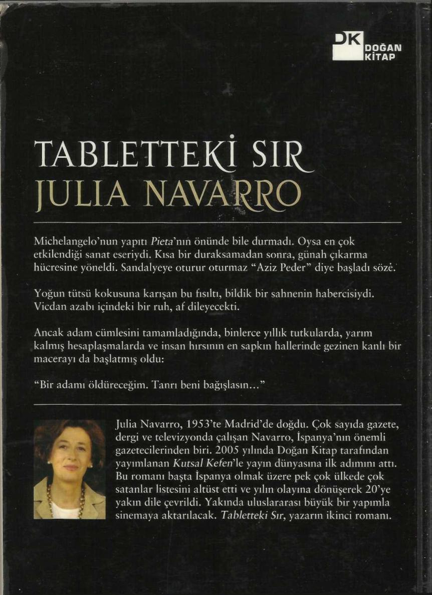

- İstediğiniz nedir?
- Onları Irak'tan çıkarmak ve bütün dünyaya göstermek, diye yalan söyledi. Profesör Picot'nun gerçekleştireceği serginin bir parçası olsun. Biliyorsunuz ki, kocam, Safran'da bulunan nesnelerin bir bölümünün Irak dışına çıkarılması için müsaade almayı başardı. Ben Tablet Kitabı Mukaddes'in da bu sergide olmasını istiyorum, bu son elli yılın en büyük arkeolojik keşfini bütün dünya bilsin istiyorum. Tablet Kitabı Mukaddes birçok tarihsel ve arkeolojik teoriyi yeniden gözden ge
çirmeyi gerektirecektir. Hıristiyanlar arasında büyük heyecan yaratacaktır, çünkü İbrahim Peygamberin gerçekten var olduğunu gösteren apaçık bir kanıt bu, Yaratılış konusunda bildiğimiz her şeyin Kral Yoşi-ya döneminde Kudüs Tapınağı'nda bulunan Kitabı Mukaddes'te yazıldı
ğı gibi olmasını ona borçluyuz.
İki kadın ses çıkarmadan bakıştılar. Birbirlerine güvenmiyorlardı, çünkü belki de aralarında Yves Picot'yla ilgili farkında bile olmadıkları bir rekabet vardı. Clara, Miranda'nın onu Saddam rejiminin koruması altındaki biri olarak gördüğünü, savaşa karşı da olsa, gazetecinin onu güvenilecek biri olarak görmediğini biliyordu.
- Bu tabletleri çıkarmanıza niçin müsaade etmediklerini anlamıyorum, neticede kocanız tapınakta bulduğunuz nesnelerden yirmiden fazlasını yurtdışına çıkarmak için müsaade almış durumda, ayrıca tablet Coraline
olarak da kaç tanesini bilmiyorum.
- Bu tabletlerin çok yüksek dinsel değeri var, tarihi ve arkeolojik de
ğerini bir yana bıraksak bile. Siz anlamıyorsunuz, ama birkaç tane daha tablet değil söz konusu olan, bunlar Kitabı Mukaddesin ta kendisi, insanlığın yazıya geçirilmiş ilk kutsal belgesi, Tanrı'nın İbrahim Peygamber'e vahyettiği kutsal metin bu. Rejimin bunu Irak'tan dışarı çıkarmaya müsaade edeceğini sanıyor musunuz? Bu temel bir nesne, üstelik Saddam'ın işleri ters giderse bunları bozuk para gibi harcar... Lütfen, Miranda, bana yardım edin!
- Benden bu tabletleri Irak'tan çıkarmamı mı istiyorsunuz?
- Evet... beni de... bilmiyorum...
- Ya Gian Maria'ya ne oldu?
- Ante Plaskiç'le birlikte San Ev'de kaldı.
- Neden? Neden onlar burada yok?
- Çünkü ben kaçmak zorunda kaldım. Ayed Sahadi bana yardım etti, ama bunu duyarlarsa onu da öldürürler, bizi de. Gian Maria da fırsat bulunca yanıma gelecek.
- Ya Hırvat?
- Hırvat'ın bir şeyden haberi yok, ona bir şey söylemedim.
- Niçin?
- Bilmem, ben... ben yalnız Gian Maria'ya güveniyorum.
- Ya amelebaşı?
455
- Bana para için yardım ediyor, çok para, ama daha fazla veren olursa beni satar.
- Ya kocanız?
- Kocam benim burada olduğumu bilmiyor, beni ihbar edeceğini sanmam, ama yine de riske girmek istemiyorum; benim yüzümden ona kötülük edilmesini de istemiyorum. Biz ayrılacağız, aylar var ki herkes kendi yoluna gitmeyi seçti.
- Ama ben bir şey yapamam ki, diyerek karşı çıktı Miranda
- Benim Fatima'yla burada kalmama müsaade edebilirsiniz. Odanızda bizi arayan olmaz. Biz sizi rahatsız etmeyiz, yerde yatarız. Ayed Sahadi bizi aramaya geleceğine söz verdi, gelmezse... yani, şey, o zaman bir şey düşünürüz.
- Sizi burada ararlar.
- Aramazlar, benim Bağdat'ta kaldığım akıllarına gelmez, sınırlardan birine kaçtığımı düşünürler: Fatima'yla birlikte olduğum için İran sınırında ararlar, çünkü sınırın öte yanında Fatima'nın ailesi var.
Miranda bir sigara yakıp pencereye yanaştı. Düşünmeye ihtiyacı vardı. Clara'nın ona gerçeği tümüyle anlatmadığını biliyordu, ama onun çok korkmuş olduğunu görüyordu, Fatima daha da fazla korkmuştu.
Yine de öykünün yerine oturmayan bir bölümü vardı, içgüdüleri bu kadına yardım edeceğim diye büyük bir belaya bulaşabileceğini söylüyor
Coraline
du. Üstelik, Tablet Kitabı Mukaddes'i Irak'tan çıkarma konusunda onunla aynı fikirde değildi. Bu tabletler Iraklıların kültürel mirası sayılırdı ve ancak Irak halkının müsaadesiyle ülkeden çıkarılabilirdi.
Irak'ın savaşın kıyısında olduğu bir gerçekti, gelen bütün haberler Başkan Bush'un her an bombardımanın başlaması için emir verebileceğini gösteriyordu, fakat hâlâ biraz ümit kalmıştı, hâlâ Birleşmiş Milletler Güvenlik Konseyi'nde tartışmalar oluyordu, Rusya, Fransa, Almanya gibi güçlü devletler her türlü savaş eylemine karşı çıkıyorlardı.
Clara gazetecinin kafasındaki kuşkuların bilincindeydi, ona bir çözüm yolu önerdi.
- Hiç olmazsa Ayed Sahadi gelene kadar burada kalmamıza müsaade edin. Sonra gideriz. Sizi zor durumda bırakmayız. Geceleyin soka
ğa çıkma yasağı başlar başlamaz, bizi tutuklarlar.
- Siz ne yaptınız ki, dostunuz Saddam sizi tutuklamak istesin, merak ediyorum, diye sordu Miranda.
- Hiçbir şey yapmadım, inanın. Irak'tan çıkmayı başarabilirsem, sizi aldatmadığımı kanıtlayabilirim, çünkü bu keşfi Profesör Picot'yla birlikte bütün dünyanın bilgisine sunacağım.
- Bu gece kalın, fazla yerim yok, ama bir şeyler yapabiliriz sanırım.
Yarın konuşuruz, şu anda çıkmam gerekiyor, meslektaşlarım beni bekler.
Miranda odanın kapısını kapayınca Clara rahatladığını hissetti. Gazete-456
cinin direncini kırabilmişti, ama onun ne kadar süre onlara yardım edece
ğine hâlâ karar vermediğini biliyordu. Bir tek onları ihbar etmeyeceğinden emindi, Ayed Sahadi'den ses çıkana kadar da tek istediği buydu.
Albay'ın odasında, Gizli Servis Bölümü Genel Karargâhı'nda işler her zamankinden yoğundu. Albay telefonda onu dinleyen birine bağırıp çağırıyordu; durmadan girip çıkan bir asker Albay'm masasının üstüne kâğıtlar ve belgeler koyuyor, başka bir asker de hemen onları alıp tasnifli dosyalara yerleştiriyor, dosyaları da siyah naylon poşetlere koyuyordu.
Ahmed Hüseyni viski kadehini temizliyor, Ayed Sahadi de aromalı sigaralarından birini tüttürüyordu, ikisi de Albay'ın telefondaki konuşmasını bitirmesini bekliyordu.
Sonunda konuşma bitince, iki adam dikkat kesildi.
- Benim gitmeme müsaade etmiyorlar, Saray'dakiler benim burada, Bağdat'ta kalmamı istiyor. Başkan yardımcısına "Ben bir askerim, Basra'daki birliğime katılmak ve geçerken de Kuveyt sınırındaki durumu kendi gözlerimle değerlendirmek istiyorum" dedim. Bunu yapmama izin verirler mi bilmiyorum, dedi canının sıkıldığını saklamadan.
- Yarın değil öbür gün sınırda olmalısınız; Mike Fernândez sizi Irak'tan çıkarıp Mısır'a nakletmek için kararlaştırdığımı Coraline
z noktada olacak. Kahire'de Haydar Annasir'le ilişki kurmalısınız, onun Tannenberg örgütünün beyinlerinden biri olduğunu biliyorsunuz. Hayatınızın geri kalanını, yeni kimliğinizle, huzur içinde yaşamanız için gereken belgeler ile parayı size o verecek, diyerek bilgi verdi Ahmed Hüseyni yorgun bir tavırla.
- Biliyorum, biliyorum... Ne yapmam gerektiğini söyler misin bana?
Ayın yirmisinden önce buradan çıkmazsak, belki de bir daha hiç çıkamayız, diyerek yakındı Albay.
- Ben burada kalmak zorundayım, yanıtını verdi Ahmed.
- Buna mecbursun! Operasyonu koordine etmen gerekiyor, ama Yankiler sana bir şey yapmaz, Tannenberg'in arkadaşları bu konuda garanti verdiler, yanıtını verdi Albay.
- Ne olacağı bilinmez, diye sızlandı Ahmed.
- Hiçbir şey! Hiçbir şey olmayacak! Seni buradan çıkaracaklar, Ayed'i de. O seninle kalacak, ikiniz operasyonun başarılı olması için görevinizi yapacaksınız.
Tannenberg'in adamları hazır, kararsızlık gösteremezsin; seni zayıf görürlerse, her şey yıkılır. Artık Tannenberg yok, yani birine güvenmeye ihtiyaçları var, Tannenberg'in torununun kocası sensin, aile reisi sensin, ona göre davranman lazım! Albay'ın sesi öfkeliydi.
- Clara nerede? diye sordu Ahmed Hüseyni kendi kendine yüksek sesle.
457
- Onu arıyoruz. Bütün sınır geçişlerini özel bir emirle uyardım. Fakat Saray'ı ayağa kaldırmamak için ihtiyatlı olmalıyız, dedi Ayed Sahadi.
- Sizin eşiniz çok kurnaz, ama bizim onu bulamayacağımız kadar kurnaz olamaz, diye ekledi Albay.
- Albayım, isterseniz, operasyonun detaylarını yeniden gözden geçirelim. Adamlardan bir bölümüyle görüşüp onlara yeni talimatlar vereceğim... diyerek lafa karıştı Ayed Sahadi.
- Hadi yapalım o işi, dedi Albay.
Miranda yemek süresince dalgındı. Clara'yı düşünmemek elinde de
ğildi. Ne yapması gerektiğini sormak için, içinden Paris'e Picot'ya, ya da arkeolog Marta Gomez'e telefon etmek geliyordu, ama telefonlar dinleniyorsa eline önce Clara'nın sonra da onu sakladığı için onun tutuklanmasından başka bir şey geçmezdi.
- Hasta mısın?
- Yok, hayır, yorgunum.
Fransız televizyonunun kameramanı, Miranda'nın yanıtı üzerine, omzunu silkti. Kadının, yemek boyunca, sohbete dikkatini veremediği belliydi, kaşlarım çatmasından bir derdi olduğu anlaşılıyordu.
- Pekâlâ, öyleyse Lauren Bacall'ın Humphrey Bogart'a dediğini diyorum: Bana ihtiyacın olursa ıslık çal...
Coraline
- Sağol, Jean, ama iyiyim. Uzun zamandır Amerikalıların savaşı başlatmaya karar vermesini bekliyoruz, bu çok bıktırıcı, artık yoruldum.
- Sabırlı ol, herhalde çekip gitmeyi düşürımüyorsundur, dedi Fransız.
- Hayır, gitmeyi istemiyorum, ama artık bir şeyler olsun istiyorum, bu savaş bile olsa.
- Her zamanki gibi politik olarak hatalısın, dedi başka bir çatışma ortamından tanıdığı bir İngiliz gazeteci.
- Biliyorum, Margaret, biliyorum, ama siz de hepiniz benim kadar yorgunsunuz, bahse girerim ki artık bir şeyler olsun istiyorsunuz.
Tartışma geceyarısına kadar sürdü, öyle ki, akşam yemeğini Belediye Caddesi'nde cömertçe servis yapılan kuytu bir lokalde attıkları birkaç kadehle de devam ettirdiler.
Otele dönünce Miranda artık son bir kadeh almayı reddetti ve Clara hâlâ orada mı değil mi merak ederek odasına çıktı.
Kapıyı dikkatlice açtığında iki kadının yerde duvarın dibinde kıvrılmış ve üstlerini yatak örtüsüyle örtmüş olduklarını gördü. Clara da Fatima da derin uykudaydılar, yüzlerinde hem yorgunluk hem de ümitsizlik vardı.
Dikkatle soyundu, onları yatağını paylaşmaya davet etsin mi etmesin mi biraz tereddüt etti. Sonra onları uyandırmanın bir işe yaramayacağını düşündü, çünkü yatak üçünün birden sığmayacağı kadar küçüktü.
458
- Clara nerede?
Gian Maria, Ante Plaskiç'in bu soruyu sormasını beklediği için yalan söylemeye hazırlıklıydı.
- Bilmiyorum, onu nerede bulacağımı keşke bilseydim. Onun için korkuyorum.
- O seninle vedalaşmadan gitmez, diye ısrar etti Hırvat.
- Nerede olduğunu bilsem sana söylemez miydim? En başta bizi döven adamlara dayanamaz söylerdim... ben... ben şiddete alışkın değilim, bilseydim...
- Söylemezdin, eminim, diyerek sözünü kesti Ante Plaskiç.
- Amma da çok şey biliyorsun!
- Bilirim, insanların neler yapabileceğini bilirim.
- Ben rahibim.
- Rahiplerin de neler yapabileceğini bilirim. Savaşta, köyümün rahibi halka yardım ediyordu. Bir gün militan devriyeleri geldi, bir adamı, bizim milislerden birinin şefini arıyorlardı. Rahip onu kiliseye saklamış, ama söylemedi; bütün halkın önünde ona işkence yaptılar, derisini yüzdüler, ama söylemedi. Yaptığı fedakârlık bir işe yaramadı: adamı buldular ve köyü yaktıktan sonra onu da öldürdüler.
Gian Maria, Hırvat'ın anlattıklarının üzerindeki tesirini gizleyemedi, zorlanarak ona yaklaştı ve elini omzuna koydu.
Coraline
- Bana acımanı istemiyorum, dedi Ante Plaskiç.
- Hepimizin merhamete ve acımaya ihtiyacı vardır, diye yanıtladı rahip.
- Benim yok.
Gece olmuştu ve her ikisi de, Sarı Ev'den çıkabilecek kadar toparlanmış görünüyorlardı. İki hizmetçi kadın yanlarındaki azıcık eşyayı toplamalarına yardım etmişlerdi. Bir tanesi onlara, yakınlarda oturan bir kuzeni olduğunu ve iyi para verirlerse, arabayla onları Palestina Oteli'ne kadar götürebileceğini söyledi. Kabul ettiler ve kadının kuzenini alıp dönmesini beklediler.
- Neden bana güvenmiyorsun? diye sordu Hırvat.
- Sana güvenmediğimi nereden biliyorsun?
- Kimse bana güvenmiyor. Safran'da benim herkesten ayrı tutuldu
ğumu fark etmek için tilki gibi kurnaz olmaya gerek yoktu; ellerinden geldiğince benden kaçıyorlardı.
- Öyle olsaydı, Profesör Picot seni ekibe almazdı, Clara da kalmana razı olmazdı.
- Ama ben o kadar önemsizim ki, onlara rahatsızlık da versem, beni önemsemiyorlardı. Gözlerinden uzak olunca beni hatırlamazlardı bile; bütün günüm depoya kapanarak geçiyordu.
- Görüyorum ki kendi kendine acımakla meşgulsün.
- Yanılıyorsun, sana gerçeği anlatıyorum. Ne onlar benden hoşlanı-
459
yordu ne de ben onlara önem veriyordum.
- Öyleyse işi neden kabul ettin?
- Çünkü iş iştir, hepimizin işe ihtiyacı var.
Sonunda hizmetçi kadın kuzeniyle birlikte döndü, kuzen onların arabaya binmesine yardım etti. Palestina Oteli'ne varmaları bir çeyrek saat sürdü. Orada hâlâ lobi ile bar arasında kalanlar vardı. Resepsiyon görevlisi onlara hiç boş yerleri olmadığına yemin etti; ancak uzun ısrarlardan ve el altından uzattıkları birkaç yeşil dolardan sonra, onlara iki oda vermeye razı oldu, söylediğine göre odalar tamir gördüğü için çok kötü durumdaydılar, onarımları koşullar yüzünden yanın kalmıştı.
Resepsiyon görevlisi haklıydı. Onları götürdüğü odalar yalnız iyi bir badana istemekle kalmıyordu ne döşemeler iyi durumdaydı, ne de tuvaletler temiz sayılırdı.
- Buraları temizlemeniz gerekecek. Size bir iki yorgan getireyim.
Gian Maria, Miranda ve Safran'daki diğer gazeteciler hâlâ otelde mi, merak ediyordu. Resepsiyon görevlisi hâlâ otelde olduklarını söyledi.
- İyi, belki yarın onlardan bazısı odalarını bizimle paylaşmaya razı olur, dedi rahip umutla.
Miranda derin derin uyurken, kapısının ısrarla vuruluşuyla gerçekler dünyasma döndü.
Coraline
Yerinden sıçrayarak uyandı, kapıya doğru koşarken Fatima'yla birlikte derin uykuda olan Clara'ya çarptı.
- Kim o? diye alçak sesle sordu, aldığı yanıt onu şaşırttı.
- Gian Maria; lütfen, açın, acele edin.
Rahip, takip ediliyor mu diye, arkasına baka baka odaya girdi. Yerde kıvrılıp yatan iki yığını görünce.
- Buradalar mı? Tanrı'ya şükür! dedi.
- Neler olup bittiğini bana siz anlatabilirsiniz umarım, dedi gazeteci.
- Onu bulurlarsa öldürürler, oldu Gian Maria'nın yanıtı, gömüldüğü derin uykudan çıkmış gibi görünen Clara'yı göstererek.
- Niçin? dedi Miranda.
- Çünkü Tablet Kitabı Mukaddes'i buldu ve onu ondan almak istiyorlar, dedi Gian Maria.
- O tabletler onun değil ki, Iraklıların, yani ben sizinle aynı fikirde değilim, dedi Miranda.
- Bize yardım etmeyecek misiniz? diye sordu Clara, artık iyice uyanmıştı.
- Sizin olmayan bir şeyi alıp götürmek istiyorsunuz, yani bu bir hırsızlıktır. Ben hırsızların tarafını tutamam, savaş başlıyor bile olsa.
- Kitabı Mukaddes benimdir! dedi Clara kederli bir sesle.
- Onu bulan siz olsanız bile, Tablet Kitabı Mukaddes Irak'ındır. Ayrıca da, siz bana gerçeği söylemiyorsunuz. Büyükbabanız ve siz, Sad-460
dam rejiminin güvenilir insanlarısınız, öylesine güçlüsünüz ki, kocanız kolaylıkla, Profesör Picot'nun Safran'da bulduğu eserlerin önemli bir kısmını Irak'tan çıkarmak için rejimin müsaadesini ve desteğini aldı; öyleyse, bu tabletleri çıkarmaya neden izin vermiyorlar? Bunun olağanüstü bir keşif olduğunu biliyorum, ama bu Picot'nun, düzenlediği sergide, onları da bütün dünyaya göstermesi için gereken izni alamayaca
ğı anlamına gelmez. Sizi neden takip ettiklerini de anlamıyorum, hele rejimin sevgili kızının "hayatım tehlikede" demesini hiç anlamıyorum.
Ama siz, size ait olmayan bir şeyi sahiplenmek istiyorsanız, tabii, o başka. Bu da sizi hırsız yapar, burada da dünyanın her yerinde de bu böyledir. Yani yarın saklanacak başka bir yer bulun kendinize. Bir soyguna karışmayı istemem, Profesör Picot'nun da sizin davranışınızı hoş
göreceğini sanmam.
Miranda'nın sözleri Clara'da bir kova soğuk su etkisi yaptı. Fatima da uyanmış, yerde oturup olanları izliyordu, yüzünü elleriyle kapadı.
- Size gelince, Gian Maria... davranışınız beni şaşırtıyor. Siz bir din adamısınız ve bir soyguna ses çıkarmıyorsunuz; yalnız bu da değil, hırsıza yardım etmek istiyorsunuz. Açık söyleyeyim, hiçbir şey anlamıyorum, dedi Miranda.
Gazetecinin sözleri rahibi sarstı, bu tabletlerin Clara'ya ait olmadıklarını hiç düşünmemişti. Birkaç dakikalık bir şaşkınlıktan soma, Miranda'ya dedi ki:
Coraline
- Haklısınız ya da kısmen haklısınız. Ama... yani, işler öyle göründü
ğü gibi değil, sizin anlattığınız gibi değil. Yüzüme bakın, ışığı yakın.
Miranda sehpanın üstündeki gece lambasını yakınca rahibin dayak yemiş suratını ve morarmış elini gördü. Telaşlanarak.
- Ne oldu size? diye sordu.
- Albay, Clara'nın nerede olduğunu öğrenmek istedi, yanıtını verdi rahip.
- Albay mı?
- Siz onunla Safran'da tanıştınız mı bilmem. Çok nüfuzlu bir adam, tabletleri istiyor, ama onları Irak için istemiyor, onları satmak için istiyor. Sanırım Clara bunu bize açıklayabilir, ama benim Sarı Ev'de duyduklarım Amerikalı arkadaşlar ve bir de savaşın yarın başlayacağı gibi şeylerdi.
- Savaş yarın mı başlıyor? Bu Albay bunu nereden biliyor? Hiçbir şey anlamıyorum, dedi Miranda.
- Çok karışık, anlatması zor. Tablet Kitabı Mukaddes'i ticaret için istiyor, bunun için beni takip ediyor, onları benden almak istiyor. Ben onu çalmıyorum, tek istediğim onu dünyaya tanıtmak ve savaş bitene kadar onları güvenli bir yerde saklayıp savaştan sonra onları Irak'a geri vermek, dedi Clara, böylece Miranda'nın duyduğu güvensizliği azaltmanın bir yolunu bulmuştu.
461
- Ya da bu tabletleri ele geçirmek isteyen yolsuzluğa bulaşmış bir Albayımız var... İyi öyleyse, onu ihbar edin ve yetkililere teslim edin.
Mesela kocanıza söyleyin, yanılmıyorsam Arkeoloji Bölümü müdürüydü... ya da ona benzer bir şey, öyle değil mi?
- Yapamam, dedi Clara.
- Kocanız da mı yolsuzluğa bulaşmış? Hadi canım, Clara!
- Ne düşünürseniz düşünün. Bana yardım etmek istemediğinizi anlıyorum, öyleyse Fatima'yla çıkıp gideriz, bize sabaha kadar müsaade edin. Şimdi sokağa çıkarsak bizi yakalarlar. Ayed Sahadi bizi buradan çıkarmaya söz verdi, bu otele sığınma fikrini o verdi bize. Ama merak etmeyin, sabah olur olmaz gideceğiz, söz veriyorum.
Miranda ne yapacağını bilemeden Clara'ya bakakaldı. Ona inanmıyordu, aslında ondan hiç hoşlanmıyordu. İçgüdüleri bu kadının samimi olmadığını söylüyordu, bu çaresizliğini gösteren sözlerinin gerisinde bir sahtekârlık vardı.
- Sabah olunca, gidersiniz, diye bağladı.
- Lütfen, Gian Maria'ya yardım edin, dedi Clara yalvaran bir sesle.
- Hayır, yardıma ihtiyacım yok, merak etmeyin, dedi Gian Maria.
- Var, var. Yarın Irak'tan çıkmalısınız, bombardıman başlamadan. Savaşın ne kadar süreceğini bilemeyiz. Buradan kaçın! Kalırsanız sizi öldürürler. Albay sizin buraya gelmenize nasıl izin verdi? diye sordu Clara.
Coraline
- Ante Plaskiç'i ve beni, adamlarına sorgulattıktan sonra bıraktı.
Ayed Sahadi Albay'ı iyi tanıdığınız için bize nereye kaçacağınızı söylemeyeceğinize ikna etti. Albay'ın buna aklı yattı, bizi San Ev'de bırakıp gitti. Kocanız çaresiz görünüyordu; Albay'la birlikte, ama size yardım etmek de istiyor.
- Hayır, bana yardım etmek istemiyor, Tablet Kitabı Mukaddes'i istiyor.
- Ahmed kötü bir adam değil, Clara, dedi Gian Maria.
- Bana bir iyilik yapın da buradan kaçın. Ben buradan kolay çıkamam, bu iş günlerce hatta aylarca sürebilir, ama siz gitseniz iyi olur; yalnız kalırsanız dertlerime bir de sizin derdiniz eklenir, dedi Clara.
- Çok etkileyici! diyerek sözünü kesti Miranda. Ama siz... Anlamıyorum, Gian Maria, sizin ne yaptığınızı anlamıyorum.
- Size bunu anlatamam, nasıl açıklayacağımı bilmiyorum, ama inanın bana, vicdanımın sesine uyarak böyle davranıyorum, kötü bir şey yapmadığıma inanmıyorum. Ben... Clara'nın bu tabletlerin üstüne yatacağına inanmıyorum, bir gün onları geri verecek, o onların kendisine ait olmadığının farkında, ama bu koşullarda... Bazı soruları cevaplamak çok zordur, Miranda...
- Şu ana kadar, ne siz ne de Clara sorularımı cevapladınız, yani ben bu soyguna karışmak istemiyorum. Yarın savaşın başlayacağına gelince, bundan emin misiniz?
462
- Aslında ayın yirmisinde başlayacak, yani Gian Maria'nın Irak'tan çıkmak için yarın zamanı var, dedi Clara.
- Savaşın ayın yirmisinde başlayacağından nasıl emin olabiliyorsunuz? diye üsteledi gazeteci.
- Albay söyledi...
- Ama bildiğim kadarıyla Albay, Saddam'ın ordusuna mensup, ABD
ordusuna değil, yani Bush'un hücum emrini vereceği günü bileceğine inanmam ya da...
- Hangi dünyada yaşıyorsunuz, Miranda? diye sordu Clara acı acı.
- Ya siz?
- Benim yaşadığım dünyada insanlar iş gereği başkalarının hayatına ya da ölümüne karar verirler, iyi işler ve kârlı işler yapmak için. Bu savaştan çuvalla para kazanacak çok insan var, oldu Clara'nın öfkeli yanıtı.
- Benim bildiğim bir şey varsa o da şu ki, savaş olunca insanlar ölürler, insanlar hiç için ölürler, dedi Miranda kızgınlıkla.
- Hiç için mi? Hayır, yanılıyorsunuz. Az önce söyledim: Birilerinin para kazanması için ölürler, birilerinin çok para kazanması için... Hem de bugün güç sahibi olanlar ve yarın da güç sahibi olacak olanlar güçlerini artırırlar. Bu savaş bunun için yapılacak, bütün savaşlar bunun için yapılır. Bunu ne siz durdurabilirsiniz, ne de ben... Bu savaş olmazsa, başka savaş olur; tarih budur, Miranda, insanlığın tarihi budur. Ar
Coraline
keolojide tek bir şey öğrendim o da kazıp çıkardığımız şehirlerin çoğu ya bir savaşta yakılıp yıkılmış ya da bir savaştan sonra terk edilmiş...
Değiştirilemeyecek şeyler vardır.
Clara katı konuşuyordu, konuşurken, çevresindeki gerçekleri anlamayan Miranda'ya acıma dolu gözlerle bakıyordu.
- Biliyor musunuz, siz ve ben hep karşıt cephelerde olacağız, yanıtını verdi gazeteci, Clara'ya karşı hissettiği aşağılama duygusunu saklamadan. Türdeşlerine felaket ve acı getirenler hep sizin gibi insanlardır.
- Lütfen, lütfen! diyerek araya girmeye çalıştı Gian Maria. Bu kavga çok saçma, hepimizin sinirleri bozuk...
- Sinirlerimiz mi bozuk? Clara'nın dediklerini duymadınız mı? Bu kadın için ne bir nesnenin ne de bir insanın değeri var, tek istediği arzularını tatmin etmek. Bence... bence o bir canavar...
Miranda'nın sözleri onları öylesine sarstı ki konuşamadılar. Daha sabahın olmasına saatler vardı, odadaki gerilim hepsi için dayanılmaz olmuştu.
Clara, Miranda'ya aldırmadan Gian Maria'ya döndü.
- Sizden buradan gitmenizi rica ediyorum!
- Peki, ya sen ne olacaksın? Ben sana yardım etmek istiyorum...
- Irak'ın bir ucundan öbür ucuna bir rahiple beraber kaçabilir miyim sanıyorsun? Albay'ın bizi bulması ne kadar sürer sence? Elimde tek fırsat var, onu da senin için riske atmak istemem.
463
- Başına benim yüzümden bir şey gelmesini istemem, tek istediğim sana yardım etmek, diyerek karşı çıktı Gian Maria.
Kapının birkaç kez vurulduğunu duyulunca ürkerek sustular. Miranda, tuvalete girmelerini işaret etti, soma kapıyı açtı.
Ayed Sahadi sinirli gözüküyordu tek kelime söylemeden kapıyı itip girdi, kapıyı arkasından kapadı.
- Neredeler? diye sordu.
- Kim nerde?
- Kaybedecek zamanım yok! Nerede Clara?
Tuvaletin kapısını itip, gülümsedi. Gian Maria, Clara ve Fatima duvara yapışmışlar, Fatima'nın yüzünde korku, Gian Maria'nın yüzünde kaygı, Clara'nın yüzünde meydan okuma vardı.
- Çıkın, gidiyoruz, emrini verdi Clara ile Fatima'ya.
- Ben de gelmek istiyorum, dedi Gian Maria.
- Ayak bağı olursun, dedi Clara.
- Neden buradan gitmesi için ona yardımcı olmuyorsunuz? diye sordu Ayed, Miranda'ya.
- Nasıl edebilirim ki? Söyleyin onu buradan nasıl çıkarabilirim. Bana az önce söylediklerine göre savaş yarın başlıyormuş, yani sınıra gitmeye çalışmak intihar olur.
Ayed Sahadi, Clara'ya sitem ederek baktı. Savaşın yarın başlayacağı
Coraline
nı söylemesine ne gerek vardı!
- Siz burada kalın, dedi Gian Maria'ya, Amerikalılar bu otelde gazetecilerin olduğunu biliyorlar, yani burayı bombalamazlar.
- Sizinle birlikte gelmek istiyorum, diyerek ısrar etti Gian Maria.
- Bize bir faydanız olacağını sanmıyorum... dedi Ayed yüksek sesle düşünerek.
- Gian Maria, sen gelmeyeceksin. Benim hayatım tehlikede, yani gelmeyeceksin.
Clara'nın sözleri tartışmaya yer bırakmayacak kadar kesindi, fakat Ayed Sahadi rahibin varlığının bir yararı olur mu olmaz mı hesabını yapıyordu.
- Onları nereye götüreceksin? diye sordu Gian Maria.
- Sana bunu söylemem, Albay seni yeniden sorguya çekerse geçen seferki kadar nazik olmaz, yanıtını verdi Ayed.
- Ama işkence yaparlarsa, Clara'nın sizinle gittiğini söyler, dedi Miranda.
- Ama nereye gittiğimizi bilmiyor ki, yani gidiyoruz. Yüzlerinizi örtün ve ne diyorsam onu yapın. Her taraf gizli servisin adamlarıyla dolu, dedi Ayed Sahadi.
- Nasıl çıkacağız? diye sordu Clara.
- Bir halının içinde, yani aslında iki halının içinde. Servis kapısında bir kamyon var, halıları taşımak için bekliyor, otelden böyle çıkacaksınız. Be-464
nimle daha sonra buluşacaksınız. Şimdi servis asansörüne gidiyoruz.
Miranda ile Gian Maria'yı orada bırakıp odadan çıktılar. Gazeteci ferahlamış görünüyordu, rahip ise büyük bir üzüntü içindeydi.
- Bir kadeh alır mısınız? teklifinde bulundu Miranda.
- İçki içmem, yanıtını verdi fısıldar gibi rahip.
- Ben de içmem; birkaç şişe var, ikram için. Ama bu gece bir lokma alacağım.
Tuvalette bir bardak aradı, dolabından bir şişe Bourbon açtı. İki parmağıyla bardağı dudaklarına götürdü, sıvının gırtlağını yaktığını ve birkaç saniye soma da içini ısıttığını hissetti.
- Clara sizin için ne ifade ediyor? diye soruverdi rahibe.
Gian Maria ne yanıt vereceğini bilemeden ona baktı. Gerçeği söyleyemezdi.
- Hiçbir şey... Kafanızı yormayın boşuna. Ona karşı ahlaki bir görevim var, hepsi bu.
- Ahlaki bir görev mi? Neden?
- Çünkü ben rahibim, onun için, Miranda, onun için. Bazen Tanrı bizi hiç beklemediğimiz durumlara sokar. Size başka yanıt veremediğim için üzgünüm.
Miranda, Gian Maria'nın açıklamasını kabul etti. Rahibin onu aldatmadığını biliyordu, içindeki ona acı verdiği anlaşılan çırpınmayı fark ediyordu.
Coraline
- Savaşın yarın başlayacağı doğru mu? diye sordu.
- Albay ve Ahmed böyle söylediler.
- Bugün ayın on dokuzu...
- Demek ki yarın bombalamaya başlayacaklar.
- Onlar bunu nereden biliyorlar?
- Bilmem, Washington'daki bazı adamlardan söz ettiler, ama doğrusu bilmiyorum. O sırada bana düşünebileceğiniz en korkunç dayağı atmaktaydılar.
- Evet, görüyorum, ya Ante Plaskiç nerede?
- Odasında. Ona biraz daha fazla ders verdiler, ayağa kalkmamız ve buraya gelmemiz zor oldu.
- Sizi kim getirdi?
- Clara'nın hizmetçilerinden birinin kuzeni.
- Şimdi ne yapmak niyetindesiniz?
- Ben mi? Bilmem. Öyle hissediyorum ki... öyle hissediyorum ki ba
şarısızlığa uğramak üzereyim. Clara'nın iyi olduğunu bilmeden Irak'tan gidemem.
- Ama onun saklanması gerekiyor, sizinle temasa geçemez.
Kapının vurulması konuşmalarını yarıda kesti. Miranda ile Gian Maria sustular, kapının vurulduğunu sandıklarına inanmak istiyorlardı.
Yeniden vurulduğunu ve kapıyı aç diyen sesi duydular.
465
Clara bembeyazdı, Fatima titriyor, Ayed Sahadi öfkeli görünüyordu.
- Çıkamadık, imkânsız! Albay kimseye güvenmiyor, oteli kuşatmış.
Kamyonu denetlemişler, askerlerin gözetiminde. Bizi yakalamadılar, çünkü şoför yük taşıyacağından başka bir şey bilmiyor. Şimdi burada kalmaları gerekiyor.
- Burada mı? Hayır, inanın burada kalamazlar. Başka bir yer arayın, ama odamda kalamazlar, diyerek kesin bir tavırla karşı çıktı Miranda.
- Öyleyse, çıkıp askerlere onları tutuklamalarını söyleyin, diyerek ona meydan okudu Ayed. Bunu yapmayacaksanız, ben onları çıkarana kadar ya da gelip tutuklanana kadar burada kalacaklar.
- Odamda kalamazlar! dedi gazeteci.
- Benim odama gelsinler, diye önerdi Gian Maria.
- Oda buldun mu sen? Kaçıncı katta? diye sordu Ayed Sahadi.
- Dördüncü katta. Korkunç bir oda, tek yatağı var, duşu çalışmıyor, ama olsun, ayarlarız.
- Ya Ante Plaskiç? diye sordu Clara.
- Birinci katta
- Ama seni görmek isteyebilir, senin odana gelmesi şaşırtıcı olmaz, dedi Ayed.
- Olabilir, gelirse, içeri almam.
- Ya otelin temizlik servisi? Bir odada otel defterine yazılmamış iki Coraline
Şii kadın görünce ne derler? diye sordu Miranda.
- Dinleyin, duruma göre tavır almalıyız. Siz onları burada istemiyorsanız, Gian Maria'nın odasına giderler. İnşallah Albay oteli aramaz! Hadi, şimdi bizi odana götür.
Yeniden çıktılar, Gian Maria da peşlerinden. Miranda kendine iki parmak daha Bourbon servisi yaptı, bir dikişte içip yattı. Yorgundu, uyumaya ihtiyacı vardı, ama uyku tutmuyordu. Birkaç saat sonra sava
şın başlayacağı haberini kafasından atamıyordu. Clara ve Ayed bunu nasıl bilebiliyorlardı?
Telefonun sesi onu uyandırdı. Arkadaşları kahvaltıya bekliyordu, sonra çıkıp Bağdat sokaklarında kayıt yapacaklardı. On beş dakika sonra duştan çıkmış, ıslak saçlarla lobideydi.
Günün geri kalanını gergin geçirdi, ne yapacağını bilemiyordu: bildiklerini meslektaşlarıyla paylaşmalı mıydı, savaşın birkaç saat sonra başlayacağını onlara söylemeli miydi, yoksa susmalı mıydı?
Londra'daki patronuna telefon etti, patronu savaşın patlamak üzere olduğu konusunda kuvvetli söylentiler var dedi, "Bugün olur mu?" diye sorunca güldü.
- Bilseydim, ek baskı yapardım! Bugün ayın on dokuzu, iki gün önce Başkan Bush Saddam'a ültimatom çekti; biliyorsun bütün elçilikler bo
şaltıldı ve kendi vatandaşlarına Irak'tan çıkmalarını tavsiye ediyorlar, yani patlama her an başlayabilir, ama ne zaman olacağını bilmiyoruz.
466
Seni arayacağım. Sanırım, kafanıza bombalar düşmeye başlayınca, sen beni daha önce ararsın.
Miranda, Clara'dan ya da Gian Maria'dan haber almak için hiçbir şey yapmadı. Onların otelde, odasının bir alt katında olduğunu biliyor ve başlarına geleceklerden kaygılanıyordu, ama aynı zamanda da bir soygunun suç ortağı olmak istemediğini söylüyordu kendi kendine, Clara'nın yaptığı da buydu, Tablet Kitabı Mukaddes hırsızlığı.
O gece meslektaşlarıyla sohbetini özellikle uzattı, bomba seslerinin duyulmakta gecikmeyeceğinden emindi. Birden gökyüzü ateşlerle ve yıldırımlarla aydınlandı ve arkasından sağır edici bir gümbürtü koptu, herkes korkudan tir tir titredi. Tarih martın yirmisiydi, savaş başlamıştı.
Saatler sonra, basın bürolarından gelen haberle, Bağdat'taki seçkin gazeteciler Müttefik kuvvetlerin Irak'a girdiğini öğrendiler. Zarlar atılmıştı.
39
Mike Fernândez sabırsızlıkla saatine baktı. Amerikan ve ingiliz birlikleri Irak'ın karadan işgaline başlamıştı; Tannenberg'le birlikte titizlikle hazırladıkları operasyon da bu saatte başlayacaktı. Yeşil berelilerin eski albayı, kendi kendine, "Hiçbir aksilik olmamalı" diye söy
Coraline
lendi, Alfred Tannenberg'in ölümü bile en küçük bir hatanın bahanesi olamazdı. Oyuna çok para konmuştu; adamlar, eğer ganimeti ele geçirip de buluşma noktasına sağ salim ulaştırırlarsa dolgun ücretler alacaklarını biliyorlardı. Birkaç saatin sonunda herkes Irak'tan çıkmış
olmalıydı.
Bağdat'ta, aynı anda, üstleri askeri üniformalı ve yüzleri dağ maskesiyle örtülü bir grup adam, birkaç saat önce girip saklandıkları depodan çıkmak için şeflerinden gelecek işareti bekliyorlardı.
Hepsi yıllarca Alfred Tannenberg'e hizmet etmişlerdi. Reisleri olan adamın cinayete kurban gitmesi onları kargaşa ve anlaşmazlık içine sokmuştu, fakat Tannenberg'in damadı onlara operasyonda hiçbir de
ğişiklik olmayacağını, en önemlisi de, herkesin, yaptığı işe göre para alacağını söylemişti. Onlara şimdi kendisinin aile reisi olduğunu, onlardan, eski şefe gösterilen bağlılığı ve başarıyı göstermelerini beklediğini söylemişti.
Ceplerine koyacakları para onlara sorunsuz bir gelecek garantisi veriyordu, onun için görevi sürdürmeyi kabul etmekte duraksamamışlardı. Operasyondan sonra ne yapacaklarını zaman gösterecekti. Kuveyt sınırını geçip de ganimeti şu eski Amerikan subayına teslim ettikleri ana kadar sadakatle hizmet edeceklerdi; Amerikalı, emir vermeyi ve itaat ettirmeyi bilen bir adamdı, onu seviyorlardı.
467
Şefin cep telefonunun zili, zamanın geldiğini bildiriyordu. Şef telefonu açtı ve operasyona başlamak için bekledikleri emri dinledi.
- Gidiyoruz, dedi.
Ayağa kalktılar ve silahlarını bir kez daha kontrol ettiler, maskelerini indirdiler yüzlerini kapadılar, siyah renkli kamuflaj tulumlarını giyip gecenin karanlığında görünmez olduktan sonra, onları bekleyen askeri kamyona bindiler.
Bombalar ve uçaksavar bataryaları Bağdat'ın göğünü aydınlatıyordu, çalan sirenler evlerine kapanmış insanların yüreğine korku salıyordu.
Karşılaştıkları askeri araçların yanından hiç dikkat çekmeden geçtiler ve nihayet Bağdat Ulusal Müzesi'nin arka kapısında araçtan indiler, birkaç saniyede içerdeydiler.
Müzeyi koruyan bekçilerden bir bölümü saatler önce gitmişti, gece çalışmayı isteyenler kalmıştı. Bombaların gümbürtüsü ve ışıkların sönmesi onları korkutmuyordu. Bütün alarmları kapatmışlardı, müze ellerinde savunmasız kalmıştı.
Yüzleri maskeli adamlar, ellerinde naylon torbalar bir bölümden öbür bölüme geçerek dikkatlice kendilerine verilen listede ismi yazılı objeleri topluyorlardı. Aralarında tek söz etmiyorlardı. Şefleri gibi görünen adam toplanan nesnelerin incinip hasar görmemesine, özellikle de adamlardan birinin, heveslenip de, aldığı parçayı naylon torbanın dışına kaydırmamasına dikkat ediyordu.
Coraline
Bir çeyrek saatten az bir zaman sonra adamlar ince ince oyulmuş fildişi paneller, silahlar, aletler, avadanlıklar, pişmiş topraktan sürahiler, tabletler, bazalttan, kumtaşından, diyoritten, kaymaktaşından altınlı gümüşlü heykeller, ahşap parçalar, silindir mühürler... Nesneler öylesine çoktu ki hepsini kamyona güçlükle yükleyebildiler.
Sonra, girdikleri gibi hızla müzeden çıktılar. Hiçbir Bağdatlı, o gece ulusal mirasının çalınıp götürüldüğünü aklına getirebilecek durumda değildi, çünkü o sırada tek yaptıkları ölmemek için dua etmekti.
Ahmed Hüseyni odasının karanlığında sabırsızlıkla bekliyordu. Cep telefonunun zilini duyunca kalbinin hızlandığını hissetti.
- Tamam, gidiyoruz, diyerek haber verdi komando şefi.
- Her şey yolunda gitti mi?
- Hiçbir terslik yok.
İki dakika sonra başka bir adam ona benzer bir haber veriyordu; adamlarıyla birlikte şimdi Musul Müzesi'nden çıkmıştı. Bağdat'taki gibi, müzeye rekor sayılacak bir zamanda girip çıkarken hiçbir sorunla karşılaşmamışlardı. Neyi götüreceğini bilmek büyük avantajdı. Ahmed Hüseyni'nin hazırladığı liste, adamların gereksiz nesneleri yüklenmesini önlüyordu.
Arkeolojik Kazılar Dairesi müdürü, listeleri hazırlarken yürütecekleri objeler ve özellikleri hakkında sağlam ve kesin bilgiler vererek bir 468
bilim kişisi olarak bilgisinin derinliğini göstermişti!
Kayra'dan, Tikrit'ten ya da Basra'dan gelen öbür telefonlar da öncekilerle birleşti. Alfred Tannenberg'in komandoları ülkeyi enine boyuna talan ederek misyonlarını başarıyla tamamlamışlardı; naylon torbalar içinde Irak'ın ruhunu, Irak'ın tarihini götürüyorlardı; aslında insanlığın tarihini götürüyorlardı...
Ahmed Hüseyni bir sigara yaktı. Yanında, Albay'ın yeğeni başka bir telefonla konuşuyor, amcasına görevin başarısını haber veriyordu, aslında gerçekte görev bütün komandolar tek tek hedeflerine, Kuveyt'e, Suriye'ye, Ürdün'e... varana kadar tamamlanmış sayılmazdı.
Odanın ışıkları hâlâ kapalıydı. Bakanlıkta yalnızdılar ya da onlar öyle sanıyorlardı. Albay onlara, operasyonu koordineli olarak yürütmek için, oradan bir yere kımıldamamalarını emretmişti; yanlışlıkla, her yana düşen bombalardan birine hedef olmamak için pencereleri kapamışlar, perdeleri indirmişlerdi.
Irak'tan nasıl ve ne zaman çıkacaklardı? Albay, Ahmed'e söz vermişti, en iyi adamı olan Ayed Sahadi uygun zamanda onu çıkaracaktı, ama Ayed şu ana kadar bir hayatiyet belirtisi göstermemişti, şu saatlerde kendi biriminde savaşıyor da olabilirdi Albayla birlikte Basra'ya gitmiş
oradan Kuveyt'e doğru yola çıkmış da. Tannenberg ölünce, Hüseyni, Albay'a güvenmemeye başlamıştı; aslında kimseye güvenmiyordu, çünkü ona Clara'nın büyükbabasının sahip olduğu otoriteyi tanımıyorlardı; Coraline
yani onu feda etmeleri gerekirse hiç düşünmeden ederlerdi. Onu kaderiyle baş başa mı bırakacaklardı yoksa gerçekten Ayed onları aramaya gelecek miydi, bunu anlamak için daha saatler geçmesi gerekiyordu.
Paul Dukais bir sigara yaktı. Az önce Mike Fernândez'den operasyonun başarısını teyit eden bir telefon almıştı.
- Biz imkânsızı başardık, şimdi size yalnızca zoru başarmak kalıyor, diye şaka yaptı eski yeşil bereli.
- Aman hata yapmayalım, delikanlı, diyerek şakayı sürdürdü Dukais. Üstesinden gelmişsiniz.
- Tabii üstesinden geldik, efendim.
- Kayıp var mı?
- Bazı ekipler kendilerini savunmak zorunda hissettiler, ama ciddi bir şey yok efendim.
- Güzel, ilk fırsatta eve dön, senin görevin bitti.
- Önce yükler, varması gereken yerde mi, emin olmak istiyorum.
- Tamam.
Planet Security başkanı sevinçle ellerini ovuşturdu. Onun işi antikacılık değildi, ama değerli yükü gideceği yere ulaştırmak ona, satılan malların toplam değerinin yüzde ikisi kadar bir ödül dışında, başka büyük çıkarlar da sağlayacaktı.
469
Paul Dukais onlara iyi haberi ilettiğinde, Robert Brown ile Ralph Barry vakıf başkanlığının yıllık toplantısını hazırlıyorlardı. İki adam kendilerine uzun bir viski servisi yaparak hemen olayı kutladılar. Eğer mentoru George Wagner böyle bir habere kahkahalarla gülmüyorsa bunun kimsenin ve hiçbir şeyin bu adamı etkilemesinin mümkün olmayışından başka bir açıklaması olamazdı.
- Söyle bana, Paul, şimdi sırada ne var? diye sordu Robert Brown.
- Şimdi yük, uygun biçimde ambalajlanacak, sonra birkaç gün içinde, iki ya da üç günden fazla olmayacağını umduğum bir sürede, hedefine ulaşacak. Bir bölümü doğruca İspanya'ya gidecek, bir bölümü Brezilya'ya, bir bölümü de buraya gelecek.
Alfred artık aramızda değil, fakat onun sağ kolu olan Haydar Annasir'in elinde, neyin nereye gideceğini gösteren detaylı bir liste var. Bir aksilik olmazsa, ki olması için bir sebep yok, olanaksızı da zoru da ba
şarmış olacağız.
- Ahmed Hüseyni'den ve Clara'dan haber var mı?
- Mike diyor ki, Clara kayıplara karışmış, tabletleri de yanında götürmüş... Onu er ya da geç yakalarız elbette. Yanında arkeolojik bir servet bulunduran bir kadın ebediyen kaybolamaz. Sevgili Ahmed'e gelince, bizim çocuklar Irak'ı bombalamaya başladığında onun Irak'tan çıkarılması öngörülmüştü... Birkaç günlük bir mesele.
Coraline
- Onu çıkarabilecekler mi, emin misin? Rejimin adamlarından biri olarak...
- Ahmed, Tannenberg'in, Saddam'ın yakın çevresine yerleştirilmiş
bir adamıydı, hakkında kötü bir hüküm vermeyelim... dedi Dukais edepsiz bir sinizm ve alaycılıkla.
- Elbette, elbette, ben onun bilgisini ve entelektüel formasyonunu çok takdir ederim, diye yanıtladı Antik Dünya Vakfı başkanı Robert Brown. Clara'ya gelince, hiç meraklanma, onu bulacağız; Albay'dan başka, onu arayan çok özel bir adamım daha var. Son aylarda hep onun yakınlarındaydı. Onun izini bulabilecek biri varsa, o da bu adamdır.
- Bağdat'ta mı?
- Adamım mı? Evet, Clara'yla birlikte orada kaldı. Merak etme, o bu işi halledecek.
- Ben Tablet Kitabı Mukaddes'i merak ediyorum...
- Clara'yı bulunca tabletleri de ele geçiririz, Clara bizim teklifimize dayanamaz, dedi Paul Dukais kıkırdayarak.
Clara otelin küçük odasına kapanmış ümitsizlik içindeydi, son birkaç gündür oradan dışarı hiç çıkmamıştı. Her an kapının açılıp Albay'ın onu öldürmek için içeri gireceği korkusuyla yaşıyordu. Miranda'yı da bir daha görmemişti, ama Gian Maria'dan haberlerini alıyor, 470
onu sorduğunu biliyordu. Gazeteci en azından onun bu odada olduğunu sır olarak saklamış, kimseye duyurmamıştı.
Gian Maria'ysa, her gün Ante Plaskiç'in Clara'nın nerede olduğuyla ilgili sorularına kaçamak yanıtlar verip duruyordu. Hırvat ona güvenmiyordu, rahip de Clara'yla ilgili ısrarlı soruları yüzünden, Hırvat'a olan güvenini kaybetmişti. Bereket versin, savaşın doğurduğu karmaşa Gian Maria'ya biraz nefes aldırdı. Herkes can korkusuna düşmüştü.
- Ayed gelmedi, diye yakındı Clara.
- Meraklanma, şöyle ya da böyle çıkarız buradan, diye teselli etti rahip.
- Ama nasıl? Bir savaşm ortasında olduğumuzu görmüyor musun?
Amerikalılar kazanırsa beni tutuklarlar, Saddam kazanırsa yine kaçamam.
- Tanrı'ya güven. Bu ana kadar bize yardım etti, çok şükür.
Clara, Tanrı'ya güvenmem diyerek onun kalbini kırmak istemedi, o yalnız kendi güçlerine güvenirdi, başını eğip sustu.
Fatima'nın durumu onu üzüyordu. Kadın yemek yemiyor ve göz göre göre zayıflıyordu. Şikâyet etmiyordu, ama yüzünden büyük bir ıstırap okunuyordu. Clara ısrarla durumlarının belirsizliği dışında bir derdi olup olmadığını soruyor, fakat Fatima'dan yanıt alamıyordu, kadıncağızın tek yaptığı gözleri yaşla dolarak onun yüzünü okşamak oluyordu.
Radyoyu dinliyordu, kısa dalgadan bağlandığı BBC ve başka yayınları Coraline
izliyordu, fakat kendisine en iyi haberleri Gian Maria getiriyordu, bu haberleri, bağlı oldukları ajanslar, Bağdat'taki muhabirlerine iletiyorlardı.
2 nisan günü Gian Maria odaya girip, Amerikan birliklerinin Bağdat'ın hemen dışında olduğunu haber verdi, ertesi gün Amerikalıların, şehrin güneyindeki, Uluslararası Saddam Havaalanı'nı ele geçirdiği haberini getirdi.
- Ayed Sahadi nerede? Neden geri dönmedi? diye sorup duruyordu Clara.
Gian Maria'nın bu soruya verecek yanıtı yoktu. Birkaç kez Ayed'in numaralarına telefon etmişti, önceleri kısık sesli bir adam açıyordu, son günlerdeyse zil çalıyor ama kimse açmıyordu.
- Bana ihanet mi etti?
- Bunu yapsaydı bizi tutuklarlardı, dedi Gian Maria.
- Peki, öyleyse, neden gelmedi ya da haber göndermedi?
- Yapamamıştır, belki de Albay onu gözetim altında tutuyordur.
Bir akşamüstü odaya Miranda'yla birlikte geldi. Miranda, Clara'ya:
- Hırvat arkadaşınız hiç durmadan sizi sorup duruyor, dedi
- Biliyorum, fakat Ayed Sahadi beni uyardı, ona güvenmediğini söyledi.
- Sizin burada olduğunuzu biliyor, bunu gizlemek mümkün değildi, dedi gazeteci.
472
- Kim söyledi ona? diye sordu Gara.
- Aslında otel Iraklılarla dolu. Benim dostlarımdan çoğu kendilerine rehber tuttular, birçoğu ahbaplarını getirdi, otel çalışanları da kendi ailelerini burada barındırıyor, burada yaşama şansı olduğunu biliyorlar.
Amerikalılar ve İngilizler biz gazetecilerin burada olduğumuzu biliyorlar. Bu nedenle otel servisi sizin varlığınıza şaşmadı. Fatima'yla sizin burada kalmanıza ses çıkarmamaları için Gian Maria'nın bol bahşişler vermesine gerek kalmadı. Ama er ya da geç dostunuz Ante Plaskiç bunu öğrenecekti. Bana sizi sormak için yanaştı, ben hiçbir şey bilmediğimi söyleyince, burada olduğunuzu, Gian Maria'nın yanına sığındığınızı bildiğini söyleyiverdi. Ona yalan söyledim, Gian Maria tanıdığı birilerini odasına almıştır dedim, ama sanırım bana inanmadı, ben de olsam inanmazdım. Sadece dikkatli olun diye sizi uyarmak için söylüyorum.
- Ne yapabiliriz? diye Gian Maria, Miranda'ya sordu.
- Bilmiyorum, uyarmak istedim sadece. Plaskiç'e neden güvenmiyorsunuz anlamıyorum; o sizi ısrarla arıyor; ona yalan mı söyledim, yani burada Clara mı yoksa onun tanımadığı biri mi var anlamak için, her an çıkıp gelebilir.
- Öyleyse buradan gitsem iyi olacak, dedi Clara.
- Ama gidemezsin! Seni yakalarlar! diye bağırdı Gian Maria korkuyla.
- Bıktım artık! diye haykırdı Clara.
Coraline
- Sakin olun! dedi Miranda. İsteri krizleri geçirmek size bir şey kazandırmaz.
Gian Maria:
- Müsaade edin, sizin odanızda saklansın, diyerek yalvardı Miranda'ya
- Hayır, üzgünüm, size söyledim işlediğiniz suça katılamam.
- Kötü hiçbir şey yapmadık, diyerek savunmaya geçti Gian Maria.
- Soygunculuk yapıyorsunuz, oldu Miranda'nın sert yanıtı.
- Ben soygun yapmadım! Kazının masraflarını Profesör Picot ve büyükbabam ödediler, araçların ve yatırımın büyük bölümünü büyükbabam verdi. Size, bu ülke yeniden bir ülke olunca, bu parçaları Irak'a geri vereceğimi söyledim. Nereye gitmemi istiyorsunuz? Gian Maria bana sizlerin, burada olan gazetecilerin, Ulusal Müze'ye saldırıldı dedi
ğinizi söyledi, yani şimdi ben tabletleri kime teslim etmeliyim sizce, Saddam'a mı?
Miranda, Clara'nın dışa vurduğu acıyı kafasında tartarak sustu.
- Tamam, odama geçin, ama Hırvat dostunuz buraya gelip sizin burada olmadığınızı görene kadar... Buyurun anahtarı size veriyorum, odama geçin, ben gidiyorum, meslektaşlarım beni bekler. Belki biliyorsunuz belki bilmiyorsunuz, Bağdat'ın bazı çevre mahallelerinde Amerikalılar var. Her an şehrin merkezine gelebilirler.
- Dikkatli olun, diye rica etti Gian Maria.
Miranda teşekkürle gülümseyip veda etmeden odadan çıktı.
472
Gazeteci saatler sonra döndüğünde, Clara ile Fatima'yı odasında yatağın üstünde otururken buldu.
- Dostunuz Saddam'ın heykellerini yıkmaya başladılar, dedi selam yerine.
- Kimler? diye Clara merakla sordu.
- Iraklılar.
- Bunu ödeyecekler, dedi Clara alçak sesle, Fatima da yeniden ağlamaya başladı.
- Dünyanın bütün televizyonları o sahneyi filme aldı. Ha, bakın, Amerikalılar şehrin kontrolünü ele geçirdiler. Bu 9 nisan tarihe geçecek, dedi Miranda alaycı bir sesle.
- Ne yapacağımı bilmiyorum... diye mırıldandı Clara.
- Ne yapacağınızı kendinize sorun, yanıtını verdi Miranda.
- Saddam nerede? diye Fatima soruverince iki kadın şaşırdılar.
- Kimse bilmiyor, sanırım saklandı. Müttefik birlikleri resmen savaşı kazandı, ama tek tük şurada burada kurşun atan adamlar var, Irak ordusunun bazı birlikleri de daha teslim olmadı, dedi Miranda.
- Şimdi Irak'ı kim idare ediyor? diye sordu Fatima tekrar.
- Şu anda hiç kimse, Bağdat'ta savaş var, kazananlar daha kontrolü ele geçiremedi, kaybedenler de tamamen teslim olmadı, ama birçok Iraklı, Amerikan askerlerini selamlamak için sokaklara döküldü. Bu gibi durumlarda ne olup bittiğini kestirmek zordur, her şey karmakarı
Coraline
şık, diye açıkladı gazeteci.
- Sınırlar açık mı? diye sordu Clara.
- Bilmem, sanırım değil, birçok Iraklı'nın komşu ülkelere kaçmaya çalıştığını tahmin ediyorum.
- Siz ne zamana kadar Irak'ta kalacaksınız? diye sordu Clara.
- Patron bana dönüş için müsaade verene kadar. Bu olaylar haber olmaktan çıkınca ben giderim, bu iş bir haftada mı olur bir ayda mı bilemem.
Gian Maria biliyordu ki, Ante Plaskiç onun Clara'dan haberi olmadı
ğına inanmamıştı. Bir keresinde Hırvat'la uzun uzun konuşmuş, yalan üstüne yalan söylemişti.
- Clara'nın odamda olduğunu nasıl düşünebilirsin? diye sitem etti.
Burada sivil toplum kuruluşunda çalışırken tanıştığım iki kişiyi odamda misafir ettim. Bu otel Bağdat'taki tek güvenli yer olduğu için benden yardım istediler.
Sonra onu odasına gelip bakmaya davet etti, böyle yaparsa Ante Plaskiç'in ikna olacağını düşünüyordu, fakat bunun böyle olmayacağını görmek hiç de zor değildi.
- Bizim için artık çekip gitme zamanı geldiğini düşünmüyor musun, Gian Maria?
473
- Şimdi Irak'tan çıkmanın zor olduğunu görüyorum. Önce iletişim sistemini yeniden onarmaları lazım, sonra da bizi bir arabaya doldurup sınıra götürmeleri... bilmem, şimdilik bana tehlikeli görünüyor.
- Miranda'ya soralım, bazı gazetecilerin, Amerikalıların savaşı kazandıklarını görür görmez gideceğiz dediğini duydum, dedi Hırvat.
- Çok iyi, yani biz onlarla birlikte gitmeyi deneyebiliriz, ama ben belki bazı yardımlarda bulunmak için kalabilirim, burada halkın ihtiyaçları pek çok, savaşın etkileri korkunç. Parçalanmış aileler var, anne ve babasını yitiren çocuklar, sakatlanan kadınlar erkekler,.. Ben rahibim, Ante, burada bana ihtiyaç var, diyerek kendini haklı çıkarmaya çalıştı.
15 nisanda koalisyon güçleri savaşı bitirdiklerini, savaşın kazanıldı
ğını ilan ettiler. Bağdat karmakarışıktı ve Iraklılar uğradıkları bu akıl almaz soyguna ağlıyordu. Ulusal Müze yerle bir edilmişti, Irak'ın başka müzelerinde de durum aynıydı, birçok Iraklı ulusal gururlarının acımasızca çiğnendiğini hissediyordu.
Ahmed Hüseyni katıldığı bu nankörce ihanetten dolayı suçluluk hissediyordu. Ayed Sahadi ona çalınan parçaların Irak dışına çıktığını, güvenli yerlerde olduğunu söylemişti, her ikisi de birdenbire paraya boğulacaklardı. Bağlantı kurdukları adamın gelip onları bulmasını beklemekten başka yapacakları bir şey yoktu. Paul Dukais her şeyi Coraline
mükemmel planlamıştı; onun adamlarından biri tehlikeli sorulara muhatap olmadan ülkeden çıkmaları için gereken evraklarla gelip onları alacaktı.
Ayed Sahadi, Clara'nın söz verdiği paradan da vazgeçmek niyetinde değildi. Otele aramaya gitmemişti, orada, götürebileceği başka her yerden daha güvende olacağını biliyordu, çünkü Albay'ın her tarafta gözleri ve kulakları vardı. Onu aramaya gittiği gece zaten gereksiz bir riske girmişti, bu yüzden durum düzelene kadar onu kaderiyle baş başa bırakmaya karar verdi. Şu anda Albay sağ salim sınırı geçmiş Kuveyt yolunda gidiyordu; orada sahte bir pasaportla, başka bir kimliğe bürünmüştü, Kahire'ye yakın lüks bir otelde dinlenen sıradan bir vatandaş olmuştu.
Ayed Sahadi, Palestina Oteli'nin lobisine girince bir grup gazeteci arasında Miranda'yı tanıdı, ateşli ateşli bazı Amerikalı subaylarla tartı
şıyordu. Gazetecinin gruptan uzaklaşmasını bekledi, ayrılınca yanına gitti.
- Bayan Miranda...
- Ayed! Hepten kaybolduğunu sanmıştım. Arkadaşlarınız sizi özledi...
- Tahmin ederim, ama gelseydim onların hayatını tehlikeye sokmuş
olurdum; dahası, sizinle ve Gian Maria'yla iyi ellerde olduklarını biliyordum.
- Harika! Siz ölüleri başkasının sırtına yükleyenlerdensiniz, diye Miranda taşı gediğine oturttu, onun bu sözü Ayed'i kahkahaya boğdu.
474
- Güzel, söyleyin neredeler?
- Yine benim odamdalar. Hırvat, yana yakıla Clara'yı sorup duruyor ne Gian Maria ne de Clara ona görünmek istiyorlar, böylece ben de yine onlara korunak vermek zorunda kaldım.
- Üzülmeyin, alıp götürmeye geldim.
- Nereye gideceksiniz, sorabilir miyim?
- Önce Ürdün'e, sonra Mısır'a. Bayan Clara'nın Kahire'de güzel bir evi var, büyükbabasının servetini orada saklıyor, size söylemedi mi?
- Ürdün'e kadar nasıl gideceksiniz?
- Birkaç arkadaşımız bizi götürecek.
- Ya Gian Maria?
Ayed Sahadi omzunu silkti. Rahibi sırtında taşımaya hiç niyeti yoktu. Clara'yla yaptığı anlaşmanın içinde o yoktu, yani ona göre rahibin cehenneme kadar yolu vardı.
İkisi birlikte Miranda'nın odasına çıktılar; Miranda, Clara'nın bir an önce gözünün önünden toz olup gitmesini arzuluyordu.
Clara, Ayed Sahadi'nin açıklamalarını sessizce dinledi.
- Bir aksilik olmaması için elimden geleni yapacağım, dedi.
- Yoksa bir dolar bile alamazsın, diyerek Clara tehdit etti.
- Biliyorum.
- Size eşlik etmek istiyorum, diye Gian Maria araya girdi.
Clara, Ayed'e baktı ve ona yanıt seçeneği bırakmadı.
Coraline
- Bizimle gelecek, o da aynı pakete giriyor.
- Bu durumda daha fazla para almam gerekecek... bir de, bakalım, bizi buradan çıkarmaya gelen adamlar fazladan bir kişinin yükünü daha üstlenirler mi?
- O benimle geliyor, dedi Clara eliyle Gian Maria'yı göstererek.
- Ya dostunuz Ante Plaskiç'i ne yapacaksınız? diye sordu Miranda.
- Siz, bizim adımıza, ona veda ediniz, diye yanıtını verdi Ayed Sahadi.
- Aman ne hoş! diye bağırdı Miranda.
Otelden çıktıklarında tepeden tırnağa siyahlara bürünmüş iki kadınla beraber giden Ayed Sahadi'ye dikkat eden olmadı. Ante Plaskiç'in lobinin bir köşesine saklanmış, gizli gizli onları gözetlediğini üçü de fark etmemişti.
Clara'nın elinde sıkı sıkı tuttuğu torba da Hırvat'ın gözünden kaçmadı, torbanın içinde tabletlerin, Tablet Kitabı Mukaddes'in olduğundan emindi. Tek yapması gereken Clara'yı izlemek ve ister zorla ister güzellikle tabletleri elinden almaktı, sahte amelebaşını öldürmek zorunda kalsa bile.
Ama içinden geçirdiği bütün bu niyetlerin hemencecik boşa gittiğini gördü. İki erkek ve iki kadın bir arabaya binip şehrin karmaşasında kayboluverdiler. Clara'yı yine elinden kaçırmıştı, onu şimdi Irak dışında aramak zorunda kalacaktı, nerede arayacağını biliyordu; er ya da 4 7 5
geç kadın Yves Picot'yla buluşacaktı, öyleyse, sorun, ondan önce oraya varıp beklemekti.
Ante Plaskiç'in vardığı sonuca ondan çok önce Lion Doyle da ulaşmıştı, o da Clara'yı yok ederek görevini tamamlamak istiyordu.
Profesör Picot, Ariadne'nin yumağıydı artık.
4 0
Roma her zamanki gibi güzeldi. Gian Maria aylardır şehrinden bu kadar uzakta nasıl yaşayabildiğine şaşıyordu. Her günkü telaşsız rutin işlerini ne kadar özlediğinin şimdi farkına varıyordu. Sabah erken edilen dualar, sakin okumalar...
Gian Maria kliniğe girip babasının odasına doğru yöneldi. Doktor Carlo Cipriani'nin sekreteri Maria onu sevgiyle selamladı.
- Gian Maria, sizi görmek ne büyük sevinç!
- Sağol, Maria.
- Buyurun, buyurun. Babanızın yanında kimse yok, ama bana sizin geleceğinizi söylemedi.
- Ona sürpriz yapacağım; haber vermeyin, lütfen.
Kapıya hafif hafif vurdu, sonra içeri girdi.
Coraline
Carlo Cipriani oğlunu görünce taş kesildi. Sanki hareket etmekte güçlük çekiyormuş gibi, ne yapacağını ne söyleyeceğini bilemeyerek ayağa kalktı. Gian Maria, odanın ortasında durmuş, gözlerini kırpmadan ona bakıyordu. Babası onun zayıfladığını, teninin rüzgârdan ve güneşten yandı
ğını fark etti. Artık o her zamanki hastalıklı mızmız çocuk değildi; o şimdi tam bir erkekti, artık babasını gözleriyle tartan bambaşka bir erkek.
- Oğlum! diye bağırdı ürkek ürkek; sonra ona doğru yaklaştı ve coşkuyla kucakladı.
Rahip babasının kucaklamasına karşılık verince, babası ferahladığını hissetti.
- Otur, otur, kardeşlerini çağırayım. Antonino da Lara da seni çok merak ettiler. Başrahibinden seninle ilgili pek haber alamıyorduk, iyi olduğunu söylüyordu, o kadar, ama nerede olduğunu söylemek istemiyordu. Niçin gittin, oğlum?
- Senin cürüm işlemeni önlemek için, baba.
Carlo Cipriani o anda var oluşunun ağırlığını sırtında duydu, kam-burlaşarak gidip bir koltuğa oturdu.
- Benim hikâyemi biliyorsun, onu ne senden ne de kardeşlerinden gizlemedim hiç. Beni nasıl mahkûm edersin? Sana ve Tanrı'ya beni affetmeniz için yalvardım.
- Alfred Tannenberg öldü, öldürüldü. Sanırım, biliyorsun.
- Biliyorum, biliyorum, herhalde benden...
476
- Senden af dilemeni mi istiyorum? Az önce bu cürüm için mağfiret arayarak günah çıkarmaya gittiğini söylemedin mi?
- Oğlum!
- Senin vicdanım bu yükten korumak için neler yaptığımı hayal bile edemezsin, ama başaramadım. İnan, hayatının kirlenmemesi için hayatımı verirdim.
- Üzgünüm, sana verdiğim zarar için özür dilerim, ama Tanrı'nın beni lanetleyeceğini sanmıyorum, çünkü bu... bu canavarın ölümünü istedim diye...
- Canavarın hayatı bile Tanrı'nındır ve onu ancak "O" alır.
- Görüyorum ki, beni affetmemişsin.
- Pişman mısın, baba?
- Hayır.
Gözlerini oğlunun gözlerine dikmiş bakarken, Carlo Cipriani'nin sesi kaskatı ve kupkuruydu, tereddüdden eser yoktu.
- Eline ne geçti, baba?
- Adalet... Biz savunmasız küçük çocuklarken bizden esirgediği adalet... Bu canavar bizden annelerimize sopayla vurmamızı istiyordu, onlara yük katın diyordu. Annemi ölürken gördüm ve hiçbir şey yapamadım, kız kardeşimi de öyle. Beni yargılamak sana düşmez.
- Ben yalnızca bir rahibim ve senin oğlunu Coraline m ve seni seviyorum, baba.
Gian Maria yaşlı adama koşup ona tekrar sarıldı, ikisi de ağlıyordu.
- Nerelerdeydin, oğlum?
- Irak'ta, Safran denen küçük bir köyde, Alfred Tannenberg'in öldürülmesini önlemeye çalışıyordum. Clara'nın hayatından da endişe ediyordum.
- O benim kız kardeşimi öldürürken eli titremedi. Sağırdı kız karde
şim, canavarın emirlerini duyamıyordu. Onu parça parça etti.
- Senin kız kardeşinin ölümünü Clara mı ödeyecek? diye sordu Gian Maria çok ciddi bir sesle babasından uzaklaşarak.
Hekim yanıt vermedi. Koltuktan kalktı ve ona sırtım döndü, oğlunun yüzüne bakmadan odada dolaşmaya başladı.
- O masum, o size bir kötülük yapmadı, diye yakardı.
- Gian Maria, anlamıyorsun, sen rahipsin, ama ben sadece bir insanım, belki senin gözünde insanların en kötüsüyüm, ama beni yargılama, oğlum, yalnızca affet beni.
- Kimden af diliyorsun, oğlundan mı yoksa rahipten mi?
- Her ikisinden de, oğlum, her ikisinden de.
Carlo Cipriani oğlunun onu bir daha kucaklamasını arzu ederek sustu, ama Gian Maria oturduğu yerden kalkıp, babasına veda etmeden, odadan çıktı, babasının yüreğini dolduran öfkeye kırgındı.
477
- Clara nerede?
Enrique'nin sesi telefon hattından kesik kesik geliyordu, oysa en yüksek güvenlikli hattı kullanıyorlardı, öyle ki George Wagner öfkelendi.
- Paris'te Profesör Picot'nun yanında. Merak etme, az önce Paul Dukais'le konuştum, bana Picot'nun çevresine sızmış bir adamının hâlâ onun yanında olduğunu, bu adamın tabletleri alacağını söyledi.
- Onları çok önceden almış olmalıydı, diyerek protesto etti Enrique Gómez, Sevilla'daki evinin sessizliğinde.
- Evet, onları çoktan almış olması gerekirdi, ben Dukais'e, bize Tablet Kitabı Mukaddes'i teslim etmeden adama parasını ödememesini söyledim. Anlaşılan bu adam Irak'tan henüz dönmüş, Picot'ya yaklaşabilmiş, yani tabletlerin nerede olduğunu biliyordur.
- Bir ekip kur... önerisinde bulundu Enrique.
- Frankie de öyle söyledi. Zamanı gelince kurarız. Bildiğim kadarıyla, Profesör Picot buldukları her şeyi kullanarak bir sergi hazırlamak, Tablet Kitabı Mukaddes'i bilim çevrelerine ve bütün halka sunmak istiyormuş. Onu bir bankanın kasasında gizli tutuyorlar. Serginin açılışı yapılana kadar tabletler orada duracak, yani şimdilik beklemek zorundayız. O
zamana kadar Dukais'in adamına ihtiyacımız olacak, çünkü o, Irak'ta profesörle birlikte bulunan grubun bir parçasını oluşturuyor, yani bize Clara'nın ve Picot'nun attığı her adımı bildirmeye devam edebilir.
Coraline
- Ya kocası?
- Ahmed mi? Ondan Clara'yı gözden kaybetmemesini istedik, ama görünüşe göre ayrılar, kız ona güvenmiyor, kocasının bize çalıştığını biliyor; yani işimize yarar mı bilmem.
- Yaramaz olur mu, George; Ahmed bize olağanüstü yararlı oldu. O
olmasaydı, müzeleri boşaltma operasyonu başarılı olamazdı.
- Onu Alfred planladı, yanıtını verdi George fısıldar gibi.
- Ama o uyguladı, Albay'la birlikte yaptılar, yaptıklarını inkâr edemeyiz.
- Çok para alacaklar, ama şimdi, dostum, birinci işimiz şu Tablet Kitabı Mukaddes'i ele geçirmek. Çok özel bir müşterim var, ibrahim Peygamberim varlığını ve Yaratılış fikrinin onun aracılığıyla yayıldığını gösteren kanıta sahip olmak için milyonlarca dolar ödemeye hazır biri.
- İhtiyatlı olalım, George; bize getirdikleri nesneleri pazara çıkarmak çılgınlık olur.
- Bekleyeceğiz, sana söz veriyorum, ama şunu bil ki, bu Tablet Kitabı Mukaddes'i isteyen müşterinin ne onu sergilemeye ne de bir müzeye koymaya niyeti yok.
- Senin Antik Dünya Vakfı'nm adamları hepsini envantere geçirdi mi? diye sordu Enrique.
- Ahmed'in yardımıyla yapıyorlar.
- Gönderdiklerin için bana da biri yardım etsin.
478
- Frankie de öyle söylüyor; merak etme, Robert Brown ile Ralph Barry'ye emir verdim, onlar bu işi üstlenecek. Yine de biraz ilerlemek istiyorsan Ahmed bir Sevilla gezisi yapabilir.
- Clara'yı ne yapacağız?
- Çok problem çıkarmıyor, ama bize kafa tutuyor... Kötü örnek oluyor...
- Haklısın, eski dostum.
Yves Picot, hattın öteki ucundaki, konuşmayı bir an önce bitirme derdinde olmayan muhatabını, ses çıkarmadan dinliyordu. On dakikadır profesör, tek kelime etmeden, söylenenlere dikkat kesilmişti. En sonunda, telefonu kapayınca, rahat bir nefes aldı. Clara, onu Safran'da-ki tapınaktan çıkarılan nesnelerin bir an önce sergilenmesi için sıkıştırıyor, gerçekleştirmeyi tasarladıkları gibi bir serginin hazırlanmasındaki güçlükleri de sebeplerini de dinlemek bile istemiyordu. Clara Tannenberg, sergiyi hazırlamak için yeterince çaba göstermediklerini söylüyordu. Nesneler ambalajlarından çıkarılmamıştı, Lion'un çektiği fotoğraflar hazırdı, çalışmaya katılan arkeologlar kazıyla ve kazıda bulunan objelerle ilgili işin somut yönünü aktaran metinler yazmıştı; üstelik, Tablet Kitabı Mukaddes de ellerindeydi Coraline . Clara'nın, elinde durduk
ça ellerini yakan bu tabletleri dünyaya sunmaya ihtiyacı vardı, çünkü biliyordu ki her geçen gün onu elinden çekip almaları tehlikesi artıyordu, bir İsviçre bankasının kasasında bile olsa.
Yani Clara, profesörün hak ettiği tatile bile müsaade etmemişti, Paris'e geldi geleli, her gün onu arıyor, baskı yapıyordu.
Neyse ki, diye düşündü, Marta Gómez sanki bir beceriklilik timsali ve ayrıca serginin hazırlanması konusunda Clara'yla aynı arzuları paylaşıyor. Birkaç haftada destek ve para bulmak için birçok vakfı ve üniversiteyi harekete geçirmişti. Aslında çorbada onun da tuzu vardı; akademi ve finans dünyasındaki nüfuzlu dostlarına telefon etmiş, sergide büyük bir keşfi sunacaklarını bildirerek onları heveslendirmişti.
Fabián ne derse desin, Marta serginin ilk açılacağı yerin Madrid olmasını sağlamıştı. Oysa Fabián aslmda açılışın Paris'te yapılmasını tercih ederdi, Louvre'da... Ama bunun için birkaç ay beklemeleri gerekiyordu. Çünkü Louvre'daki bütün sergilerin ve olağanüstü etkinliklerin programları, çok önceden hazırlanırdı.
Fabián ona bir İspanyol bankalar topluluğunun ve iki büyük işletmenin serginin hazırlanması için gereken finansmanı yüklenmeyi kabul ettiğini haber vermişti. Bunun dışında Complutense Üniversitesi'nin akademik yetkilileri ve İspanyol Eğitim ve Kültür Bakanlığı sorumluları da konuyla ilgilenmişlerdi. Sergi Madrid için büyük bir fırsattı, bu 479
başkent Ulusal Arkeoloji Müzesi'nde sergiyi misafir eden ilk başkent olacaktı; sergi daha sonra Paris'e, Berlin'e, Amsterdam'a, Londra'ya ve New York'a gidecekti.
İyi haberi iletmek için Clara'ya bizzat telefon etmeyi düşünse de, Marta'nın ona haber verdiğinden emindi. İki kadın daha da yakınlaşmış görünüyorlardı, serginin bir an önce açılışını yapma arzuları ör-tüşüyordu.
Dört arkadaş Berlin'de buluştular. Hans Hausser onlardan, yaşadığı şehre gelmelerini rica etmişti, çünkü son günlerde kendini iyi hissetmiyordu. Hans'ın zayıflığı ve yüzündeki hastalıklı solgunluk Mercedes'i kaygılandırdı.
- Karar verdiğimiz üzere Global Group başkanı Tom Martin'i görmeye Londra'ya gittim, ona görev tamamlanmadıkça geri kalanı ödemeyiz dedim. Daha önce telefonda konuşmuştuk, ama ciddi olduğumuzu anladı.
- Ne dedi sana? diye sordu Mercedes.
- Fiyatın arttığını söyledi, çünkü adamı, karşılaştığı büyük zorluklar nedeniyle, görevi yapmak için, önceden hesa Coraline p edilenden daha çok zaman harcamışmış. Ben, olmaz, dedim, sözleşmedeki görevler tamamlanmadıkça başka bir tek avro bile vermeyeceğimizi söyledim. Tartıştık ve sonunda sabit bir fiyatta anlaştık. Eğer onun adamı önümüzdeki günlerde sorunu çözerse, ayrıca bir ödül vereceğiz; yapamazsa, yalnızca sözleşmedekini alacak.
- Clara Tannenberg nerede? diye Bruno Müller sordu.
- Birkaç gün öncesine kadar Paris'teydi, fakat şimdi Madrid'de, Orta Avrupalı bir grup arkeologla birlikte, birkaç aydır kazısını yaptığı bir tapınaktan çıkan objeleri sunacağı bir sergi düzenliyor. Irak'taki durumu nazarı itibara alırsak, bunu nasıl yapacaklar bilmiyorum, yanıtını verdi Hans Hausser.
Carlo Cipriani üzgün ve dalgın görünüyordu, pek az konuşuyor ve gözlerini arkadaşlarından kaçırıyordu.
- Neyin var, Carlo? diye sordu Hans.
- Hiç... Aslında, düşünüyorum da, belki de artık bu işi burada bırakmalıyız, diyorum. Nasılsa, Alfred Tannenberg öldü, yeminimizi yerine getirdik.
- Hayır! diye bağırdı Mercedes. Geri adım atmayacağız! Onu ve onun bütün soyunu öldürmeye yemin ettik. Clara Tannenberg onun tek torunu, son Tannenberg o, onun ölmesi gerek.
Bruno Müller ile Hans Hausser başlarını eğdiler, Mercedes'i hiçbir şeyin ve kimsenin tersi bir karara ikna edemeyeceğini biliyorlardı.
480
- Yaparız, yaparız, ama ben Carlo'nun demek istediğini anlıyorum, bu kızın bir günahı yok...
- Günahı yok mu? Günahı olmayan benim annemdi, sizlerin annesiydi, kardeşlerimizdi. Mauthausen'de olan bizler hepimiz günahsızdık.
Hayır, o masum değil, o, o canavarın tohumunun bir parçası. Siz onu bırakıyorsanız... söyleyin bana... ben devam ederim, beni yalnız bırakmanıza da aldırmam, yanıtını verdi Mercedes öfkeyle.
- Lütfen, Mercedes, tartışmayalım! Yapacağız dediğimiz şeyi yapaca
ğız, ama Carlo'nun düşüncesini de göz ardı etmeyelim, diyerek sözünü kesti Bruno.
- Clara Tannenberg ölecek, siz isteseniz de istemeseniz de o ölecek, bundan emin olun, dedi Mercedes.
Genç kadının ölümüne hiçbir şeyin ve kimsenin engel olamayacağını anladılar.
Ante Plaskiç, Arkeoloji Müzesi güvenlik görevlilerinden birinin dikkatli bakışları altında kutulardan kitapları çıkarıp boş raflara koyuyordu.
Yves Picot'nun gerçekten de duygusal bir adam olduğunu düşündü, çünkü serginin düzenlenmesinde işbirliği yapması konusunda Cla-Coraline
ra'nın o kadar imalı konuşmasına karşın, profesör onu ya da Safran'da çalışanlardan birini dışlamanın haklı bir nedeni olmayacağını savunmuştu. Profesör Gomez de onun bu kararını desteklemişti.
Böylece iki haftadır Madrid'de bulunuyordu, her şeyi yapıyordu; aslında Picot onu Marta Gomez'in emrine vermişti, o da Picot gibi Irak'ta geçirdikleri ayların ürününün, yararlı bir biçimde kullanılmasına katkıda bulunmaktan gurur duyuyordu.
Fabiân ve Marta, rekor sayılacak bir zamanda bir katalog bastırmayı başardılar: Safran tapınağı üzerine iki yüz sayfalık bir kitap. Picot katalogun satışının önemli olacağına emindi.
Yan gözle Lion Doyle'a baktı. Serginin hazırlanmasında onun da bulunduğunu görünce şaşmamıştı. Lion, onun tersine, başarılı bir fotoğrafçı olarak görülüyor, sempati uyandırıyordu. Ante'yse, Lion'un göründüğü kişi olmadığını düşünüyordu, tıpkı Ayed Sahadi'nin basit bir amelebaşı olmadığı gibi.
Rasgele duyduğu bölük pörçük konuşmalardan, Sahadi'nin Clara'yı kocası Ahmed Hüseyni'yle birlikte sağ salim Irak'tan çıkarmayı başardığını ve onları Kahire'ye kadar götürdüğünü öğrenmişti, sonra o Bağdat'ta durum belli olana kadar kalmaya karar vermişti. Kahire, anlaşılan, Clara'nın kocasından boşandığı yer de olmuştu, çünkü Ahmed Hüseyni Madrid'de yoktu, ama onun da serginin açılışına katılacağını işitmişti.
481
Kitapları sıraya dizerken artık bir kez daha başarısız olma şansının olmadığını düşündü.
Tablet Kitabı Mukaddes'i ele geçirmesi için onunla sözleşme yapan Planet Security şirketinin adamı açık açık konuşmuştu: tabletleri hemen elde etmesi gerekiyordu... Bunun için de soygunculuk konusunda uzmanlaşmış olan bir grubun yardımına güvenebilirdi, grup hazırdı, Plaskiç ne zaman uygun olduğuna karar verirse, onlar, işe müdahale etmek için onun bir işaretini bekliyor olacaklardı.
Son iki hafta içinde Arkeoloji Müzesi'nden hiç dışarı çıkmadığı söylenebilirdi, öyle ki müzenin içim iyice ezberlemişti, en önemlisi de, müzenin işçileri ve korumaları onun bina içindeki gidiş gelişlerine alışmışlardı.
Alarm sisteminin ve müzenin her köşesini kontrol eden ekranların bulunduğu salonda görevli olan korumalarla dostluk kurmaya ve sohbet etmeye özel çaba göstermişti.
Emrindeki adamlardan da dikkati çekmeden binaya alışmalarını istemişti, öyle ki hemen hemen hepsi sıradan turistler gibi girip, birkaç kez, onun ziyaretine geldiler. Tabletlere el koymak için fazla zamanları olmayacaktı, kaçmalarıysa işin en karmaşık tarafıydı. Planlarına göre, tabletlerin sergileneceği salon açılmadan önce tabletleri çalacaklardı, çünkü onları sonradan götürmek olanaksız sayılırdı, ona yeterince zaman verecekler miydi, bilmiyordu. Öte yandan, Picot, tabletlerin rep
Coraline
liklerini yaptırmıştı, bu da serginin açılışından sonra replikleri müzede bırakıp asıllarım yeniden saklamayı düşündüklerini gösteriyordu, yani bu riski göze alamazdı.
Şu anda Madrid'de bir bankada olan Tablet Kitabı Mukaddes'i ne zaman Arkeoloji Müzesi'ne nakledeceklerini kimseden öğrenemediği için kaygılanıyordu. Marta ona tabletlerin varlığını büyük bir sır gibi sakladıklarını ve bu büyük keşfi, bütün dünya basınının önünde halka açıklayacakları güne kadar da kimseye bildirmeyeceklerini söyledi.
Clara tabletlerin Vatikan bilginlerince analiz edilmek üzere Roma'ya gitmesine bile müsaade etmemişti. Gian Maria, tabletler için Santa Se-de'nin onların otantikliğini tanımasından daha iyi bir onay olmayacağını ileri sürerek ısrar ettiyse de, Clara Tannenberg, Vatikan'ın apaçık deliller karşısında boyun eğmekten başka çaresi yoktur diye yanıtlamıştı bu öneriyi.
Açılışa iki gün vardı, müze sorumluları bir salonu, tabletleri herhangi bir tehlikeden koruyacak olağanüstü güvenlik araçlarıyla donatarak özel olarak hazırlamışlardı.
Clara ile Picot, Fabiân ile Marta, hep birlikte, ışıklarından panellerine kadar, bütün salonu düzenleme görevini yüklenmişlerdi, bu düzenleme sırasında tabletleri sergileyecekleri vitrinin önünden geçiyorlardı, ama tabletler sergi açılışı için müzenin kapıları açılmadan bir saat öncesine kadar yerlerine konmayacaklardı.
482
- Gergin misin? diye sordu Yves Picot, Clara'ya.
- Evet, biraz, buraya kadar gelmek bize ne güçlüklere mal oldu... Biliyor musun, büyükbabamı özlüyorum, o bu şekilde ölmeyi hak etmiyordu, bu anı ondan esirgediler.
- Hâlâ onu kimin öldürebildiğini bilmiyor musun?
Clara hayır dercesine başını sallarken gözyaşlarını tutamıyordu.
- Tamam, tamam! Başka şeyler konuşalım, dedi Picot onu teselli etmek için elini omzuna koyarak.
- Sizi rahatsız ediyor muyum?
Yves Picot Clara'yı bıraktı; ne yapacağını bilemeyerek Miranda'ya bakakaldı. Gazeteci açılışa daha birkaç saat varken müzeye girmesine müsaade etsinler diye onların yardımını isteme yolunu seçmişti.
Clara, Miranda'ya yaklaşıp yanağından öptü, aynı zamanda da onu gördüğüne sevindiğini söyledi. Sonra salondan çıkıp onu Picot'yla yalnız bıraktı.
- Beni gördüğüne sevinmemiş gibisin... dedi gazeteci şaşkın şaşkın bakan profesöre.
- Seni çok aradım, bulamadım, işyerinde sana söylemişlerdir sanırım, yanıtını verdi Picot, karşı çıkarak.
- Biliyorum... Irak'ta beklenenden fazla kalmam gerekti, orada ko
şulların nasıl olduğunu biliyorsun.
Coraline
- Bu sergiyi nereden haber aldın?
- Bak sen, Profesör! Ben gazeteciyim, ayrıca gazeteleri de okurum!
Londra'da olağanüstü bir sunum yapacağını söylüyorlar...
- Evet, Tablet Kitabı Mukaddesi
- Biliyorum... Clara ile ben bu tabletler yüzünden bayağı ciddi güçlükler yaşadık.
- Niçin?
- Çünkü bana göre o bunları çaldı... Yani bunlar Irak'ındır ve onları müsaadesiz çıkarmaması lazımdı.
- Söyle bana müsaadeyi kim verecekti; savaş başlamıştı, hatırlatırım.
- Kocası verebilirdi, adı Ahmed Hüseyni, değil mi? Antik Eserler bölümü başkanı değil miydi?
- Lütfen, Miranda, saf olma! Zaten sonunda tabletlere biz sahip çıkacak değiliz. Irak'taki durum aydınlığa kavuşunca bu tabletler oraya dönecek. O zamana kadar Louvre'un deposunda kalacaklar, orası Mezopotamya sanatının en önemli müzesidir.
Fabiân sinirli sinirli araya girdi.
- Yves, az önce bankadan telefon ettiler; zırhlı araba buraya doğru yola çıkmış.
- Kapıya gidelim; bizimle gel, Miranda!
483
Tabletler yerlerine yerleştirildikten sonra Clara vitrini anahtarla kilitledi ve heyecanla Gian Maria'nın kolunu sıktı; sonra Picot, Fabiân ve Marta'nın bulundukları tarafa dönüp gülümsedi.
Müze güvenlik şefi onlara o salon için özellikle aldıkları olağanüstü güvenlik tedbirlerini bir daha anlattığında, duydukları Clara'yı memnun etmiş gibiydi.
- Çok güzelsin, diyerek iltifat etti Fabiân.
Clara, teşekkür makamında ona alnından bir öptü. Kırmızı döpiyes elbisesi bronzlaşmış yüzünü aydınlatıyor, bu da çelik mavisi bakışlarını daha da belirginleştiriyordu.
On dakika sonra İspanyol hükümeti üyelerinin, başbakan yardımcısı ile iki bakanın, daha sonra da dünyanın dört bir yanından, olağanüstü olacağı söylenen bir serginin açılışına katılmak üzere, yola çıkan akademik otoritelerin gelmesinden az önce müzenin kapıları açılacaktı.
Avrupalı ve Amerikalı arkeologlar ve profesörler, müzenin başka başka salonlarında, vitrinlere dağıtılmış olarak sergilenen buluntuları övüyorlardı. Bu arada, Profesör Gomez ile Fabiân Tudela, İspanyol otoritelere bulunan objelerin ayrıntılarını anlatıyorlardı.
Garsonlar, ellerinde içki ve kanepelerle dolu tepsiler, bunca güzelli
ği bir arada görünce iştahları açılmışa benzeyen davetliler arasında dolaşıyorlardı.
Coraline
Picot ile Clara daha bir saat kadar, davetlilere ve basına, gururla, Tablet Kitabı Mukaddes'i sakladıkları salonu göstermemeye karar vermişlerdi.
Davetliler arasında bu cumartesi akşamı için söz verilen sürprizin ne olabileceği konuşuluyordu.
Ante Plaskiç, Planet Security'nin adamlarını müzenin içinde dağınık olarak yerleştirdi; bir bölümü garson, bir bölümü güvenlik görevlisi, kimileri de davetli kılığındaydı. Lion Doyle'un, yüzüne yapışmış gibi duran gülümsemeyi de gözden kaçırmamıştı, gerçek bir gülümsemeden çok Lion'un içindeki gerilimi açığa vuran bir sırıtmaydı bu.
Soygunu, planlayabildiğince planlamıştı, artık tabletlerin sergilendi
ği salonun kapıları açılmadan önce onları ele geçirmekten başka çaresi yoktu. Büyük bir riski göze alıyorlardı, fakat Tablet Kitabı Mukaddes'i elde etmek için başka bir fırsat olmayacaktı. Karşılarına çıkacak sıkı güvenlik önlemlerini bir kez daha kafasından geçirdi ve alarmın bulunduğu salona doğru yürüdü. Tabletleri alıp müzeden çıkmak için on dakikası vardı.
- Bayanlar Baylar, bir dakika sessizlik, lütfen, dedi Yves Picot. Sizden bu salonlardaki ziyaretinizi bitirmenizi rica ediyorum, çünkü on beş dakika sonra sizden, bizimle birlikte, içinde değer biçilemez bir arkeolojik serveti bulundurduğumuz çok özel bir salona gelmenizi isteyeceğim, bu servetin keşfi, yalnızca akademik camiada değil, ama aynı 484
zamanda toplumda ve Kilise'de aşkın bir yansıma yaratacaktır. Lütfen, bize eşlik ediniz.
Profesör Yves Picot, Marta Gömez ve Fabiân Tudela, İspanya'nın başkan yardımcısına Tablet Kitabı Mukaddes'in bulunuşunun önemini anlatıyordu; daha geriden, bir bakanla ve Madrid Üniversitesi rektö-
rüyle birlikte Clara geliyordu.
Chanel'den bir döpiyes giyinmiş yaşına göre yüzü çok güzel ve vakarlı zarif bir kadın, sakin ve fütursuz bir yürüyüşle Clara'ya doğru geliyordu. Kadın gülümsedi ve Clara tanımadığı bu kadının nazik gülümsemesine gülümseyerek karşılık verdi. Birden, biri kadını arkadan itmiş olmalı ki, kadın düşecek gibi oldu ve Clara'ya çarptı. Clara kadından ayrılırken, yüzü bir acıyla buruştu, bu sırada kadın özür diliyor ve dudaklarına resim gibi çizilmiş bir gülümsemeyle yürümeyi sürdürüyordu.
Clara rektöre görecekleri şeyin olağanüstü içerikli birkaç tablet olduğunu anlatıyordu, birden, elini göğsüne götürdü ve çevresindekilerin şaşkın bakışları önünde yere yığılıverdi.
Yves Picot ve Fabiân hemen diz çöküp Clara'nın gevşemiş vücudunu canlandırmaya çalıştılar, Clara gözlerini sanki bir kâbus görüyormuş
gibi açıyor ve kapıyordu.
Fabiân bağırarak bir hekim ve bir ambulans çağırmalarını istedi, Miranda olağanüstü bir şeylerin olacağını sezdi. Ante Plaskiç, kumpanya
Coraline
sının adamlarına bir işaret yaptı, onlar da karşılanıra çıkan bu fırsattan yararlanmaları gerektiğini hemen anladılar.
Davetlilerden biri hekim olduğunu söyleyerek, Clara'yı muayene etmek için yaklaştı, kalp bölgesinde minicik bir iğne izi buldu.
- Çabuk bir ambulans gelsin, ölüyor!
İki güvenlik görevlisi, peşlerinde zarif bir davetliyle birlikte, oradan sıvışarak Tablet Kitabı Mukaddes'in muhafaza edildiği salona yöneldiler.
Ante hızlı adımlarla, monitörlerin müzenin en uzak köşesini bile gösterdiği küçük salona gitti. Kapıya vurmadan içeri girip panelleri gözleyen görevliye iki el ateş etti. Adamın gövdesini bir köşeye sakladı ve kapıyı içeri girilemeyecek bir biçimde kapattı. Müzenin bütün alarmlarını fişten çekti. Ekranlardan adamlarının salona girişlerini, emniyet görevlisinin tepki gösteremeden susturuculu bir tabancayla vuruluşunu net olarak gördü. İki dakikadan kısa sürede tabletleri bir torbaya doldurup oradan ayrıldılar.
Hırvat içinden gülümsedi. Görevini tamamlamak üzereydi. Onun köstebekliği olmasaydı, operasyon bu şartlarda gerçekleşemezdi.
Sonra gözlerini başka bir ekrana dikti, orada Clara'yı kollarına alan Picot'ya Fabiân'ın ve gerçek güvenlik görevlilerinin çıkışa doğru koşması için yolu açtıklarını gördü.
Nedenini bilmeden, belki de umursamaz tavırları yüzünden başka 485
bir monitörde yaşlıca bir kadın dikkatini çekti. Kadın olan bitene karşı kayıtsızdı, yavaş yavaş çıkış kapısına doğru yürürken en ufak bir tepki göstermiyordu.
Kendi kendine, kadının elindeki nedir acaba, diye sordu, çünkü bir şey saklıyor gibiydi, fakat ne olduğunu göremedi.
Mercedes Barreda, müzeden çıkınca Madrid ilkbaharının ılık havasını zevkle içine çekti. Arkeoloji Müzesi'nin bulunduğu Salamanca Mahallesi'nin armonisi her zaman hoşuna giderdi. Belli bir hedefi olmadan, yaşadığı anın sevinciyle dolu sakin sakin yürümeye başladı... Zarif giyimli iki erkeğin, yanından geçişine, onları bekleyen arabaya binişine dikkat bile etmedi. Clara'nın kalbine sapladığı, şimdi elinde sakladığı delgiden nasıl kurtulacağı dışında bir derdi yoktu. İz bırakmamıştı, çünkü ince deri eldivenleri vardı, yani delgiyi herhangi bir kanala atabilirdi, ama bunu o mahallede değil de, buradan uzakta, başka bir yerde yapsa daha iyi olurdu.
Bir saat, bir hedefsizce dolaştı, sonra bir taksiyi durdurdu, onu Ritz Otel'e götürmesini rica etti; orada kalıyordu.
Hemen Barselona'ya dönmeyi düşündü, sonra fikrini değiştirdi; kaçmasına hiç gerek yoktu, çünkü aranmıyordu, kimse bakmıyor, Clara Tannenberg'in ölümüyle ilgili olduğu düşünülmüyordu. Yine de, elbisesini değiştirdi ve yeniden sokağa çıkıp istasyona doğru yürüdü. Prado Müzesi'ne yakın bir kanala gelince elindek Coralinei delgiyi attı. Otele dönerken
Clara'nm hayatına ne kadar kolay son verdiğini düşünüyordu.
Onu nasıl öldüreceği konusunda hiç duraksamamıştı. Ergenlik ça
ğında Barselona'da otururlarken büyükannesi ona Avusturya İmparatoriçesi Elisabeth'in katlini anlatmıştı.
İmparatoriçeye bir adam yaklaşmış ve ona bir delgi saplamış; az sonra imparatoriçe ölmüş, elbisesinde yalnızca iki üç damla kan lekesi varmış.
Rüyalarında Clara'yı öldürdüğünü görmeye başlayınca, delgiyi onun kalbine saplayacağı anı gözünde canlandırmıştı. Silahı bulması kolay olmamıştı. Aleti eskici dükkânlarında aramıştı. Ayrıca şirketinde çalı
şan işçilerin kullanılmış aletleri arasında da aramıştı. Sonunda aradığını, atık maddeler arasında bulmuş, onu bir sanat eseri gibi temizlemiş, cilalamıştı.
Otelin odasına dönünce buzdolabını açtı, bir şampanya şişesi çıkardı ve kendine bir kadeh şampanya ikram etti. Yıllardır ilk kez kendini coşkulu ve mutlu hissediyordu.
Lion Doyle öfkeden kuduruyordu. Clara Tannenberg ölmüştü, ama onu öldüren o değildi, bu da ücretinin kalanını alamayacağı anlamına 486
gelebilirdi. Clara'yı öldüren katilin bir profesyonel olduğunu düşündü: yoksa kim Clara'yı yüzlerce kişinin önünde göz göre göre öldürecek kadar cesur ve soğukkanlı olabilirdi ki. Clara'nın kalbine bir şey saplamışlardı, ince ve uzun bir cisim hayati organını delip geçmişti. Ama, kimdi bunu yapan?
0, Clara'yı bu gece öldürmeyi planlıyordu. Clara'nın geceleri Marta Gomez'in evine gittiğini biliyordu, oraya giderse kimse şüphelenmezdi.
Onu içeri alırlardı ve içeri girince de Tannenberg'i öldürüp görevini tamamlamış olurdu. Ayrıca Profesör Gómez'i de öldürmek zorunda kalabileceğini de hesaba katmıştı, ama bu sadece önemsiz bir aksilik olurdu. Şimdiyse, sorun, Tom Martin'e görevi bitirdiğini söyleyemeyecek olmasıydı. Gian Maria'nın ağladığını görmek Lion'u sinirlendiriyordu.
Rahip çok üzgündü, yıkılmıştı, Miranda'yla birlikte müzeden çıkıp, Clara'nın cesedinin ölüm raporu ve otopsi için taşındığı hastaneye gittiler.
George Wagner toplantıyı henüz bitirmişti ki, sekreteri onu acil olarak arayan Paul Dukais'in telefonunu bağladı.
- Tamam, görev yerine getirildi, dedi Dukais.
- Hepsi mi?
- Evet, istediğin şey elimizde. Elbette... elbette arkadaşının torunu bir kazaya uğradı. Biri onu öldürdü.
- Paket ne zaman geliyor?
Coraline
- Şimdi yolda, yarın ulaşır.
Wagner hiçbir yorum yapmadı. Enrique Gómez ile Frankie Dos Santos da Clara'nın katli konusunda bir şey söylemediler. Umurlarında de
ğildi, üstelik artık onunla yapacak hiçbir işleri yoktu.
Tek kaygıları, Irak müzelerinde yapılan yağmada talan edilen objeleri pazarlamaya başlamaktı. George, operasyonun başarısı ve Tablet Kitabı Mukaddes'in ele geçirilişi için özel olarak toplanıp kutlama yapmalarını önerdi. Tablet Kitabı Mukaddes'i alıcıya teslim etmeden önce eline almak için heyecanlanıyordu.
Lion Doyle, bir telefon kabininden Tom Martin'e telefon açtı.
- Clara Tannenberg'i öldürdüler, dedi.
- E e ?
- Kim yaptı bilmiyorum, diye hüzünlü bir sesle yanıt verdi.
- Buraya gel, konuşmamız lazım.
- Yarın gelirim.
Hastanede Yves bekleme salonunda tek kelime etmeden bir aşağı bir yukarı gidip geliyordu. Miranda da, Fabián da, Marta da aynı durumdaydılar, içlerinden konuşmak gelmiyordu. Gian Maria'nınsa tek yapabildiği ağlamaktı.
İki polis müfettişi de, onlar gibi, otopsinin sonucunu bekliyordu.
487
Müfettiş Garcîa, onlardan, otopsi sonucunu aldıktan sonra, olayları aydınlatmaya çalışmak için komiserliğe gelmelerini rica etmişti.
Adli tabip, Clara'ya otopsi yaptığı salondan çıktı.
- Bayan Tannenberg'in bir akrabası var mı?
Picot ile Fabiân, ne yanıt vereceklerini bilemeyerek bakıştılar. Marta duruma el koydu.
- Biz onun arkadaşlarıyız, burada başka kimsesi yok. Kocasıyla temasa geçmeye çalıştık, ama şu ana kadar nerede olduğunu bulamadık.
- Pekâlâ; Bayan Tannenberg'i sivri bir nesneyle öldürmüşler, ince bir hançer ya da bir delgi... sivri ve uzun bir nesne... kalbe kadar girmiş... Üzgünüm.
Hekim onlara otopsi sonucuyla ilgili başka ayrıntılar da verdi, sonra raporunu Müfettiş Garcîa'ya teslim etti.
- Müfettiş Bey, bir süre daha burada olacağım; başka herhangi bir açıklama gerekirse, beni çağırabilirsiniz.
Orta yaşlı bir adam olan Müfettiş Garcia başıyla tasdik etti. Bu olay ilk bakışta göründüğünden daha karmaşık bir olaya benziyordu, üstelik de araştırmanın acele sonuçlandırılması gerekiyordu. Basın bilgi almak için bakanlığa telefonlar yağdırıyordu. Basın için bundan daha çekici bir olay olamazdı: Iraklı bir kadın arkeolog, Madrid Arkeoloji Mü-
zesi'nde politik ve akademik otoritelerin katıldığı ve bir paha biçilmez Coraline
bir eserin sunulacağı duyurulan bir serginin açılışını yaparken katlediliyor, sergilenecek olan eser de iki yüz davetlinin, başkan yardımcısının ve hükümet üyelerinin gözleri önünde çalınıp götürülüyor.
Ertesi gün çıkacak gazetelerin başlıklarını kafasında canlandırıyordu. Yalnız İspanya basını değil; bütün dünya medyasında olay yankılanacaktı. Daha şimdiden iki amirinden telefon almıştı, katil geride bir iz bırakmış mı bırakmamış mı açıklaması için ısrar ediyorlar, özellikle de suçun neden işlendiğini bilmek istiyorlardı; olayın o gizemli buluntuyla ilgili olduğunu düşünüyorlardı. Başbakan yardımcısının eşiyse çok sert çıkmıştı: hemen sonuç alınmasını emrediyordu.
Müfettişin öldürülen arkeolog hanımın arkadaşlarını sorguya çekmekle yapmak istediği de buydu.
Komiserlikte hava çok sıcaktı, bu yüzden biraz temiz hava girsin diye pencereyi açtı, aynı zamanda Picot'yu ve yanındakileri içeri çağırdı.
Genç rahip iyice çökmüştü, hâlâ ağlıyordu; annesini kaybetmiş bir çocuk gibi Marta'ya sarılıyordu.
Gece uzun olacaktı, çünkü hepsi tek tek sorguya çekilecekti, polis iki sorunun yanıtını bulmaya çalışacaktı: Clara Tannenberg'i kim öldürdü, niçin öldürdü?
Müfettişin yardımcısı, tam dokuz haberleri verilmeye başlandığında odadaki televizyonu açtı. Hepsi, o akşam yaşadıklarının canlı görüntülerinin gözlerinin önünden geçtiğini görünce susup izlediler, bütün bu 488
imgeleri hayatları boyunca hatırlayacaklardı.
Spiker, Iraklı arkeologun öldürülmesinden başka, Arkeoloji Müze-si'nde önemli bir soygunun da gerçekleştirilmiş olduğunu bildirdi: Tablet Kitabı Mukaddes adı verilen paha biçilmez tabletler çalınmıştı. O
gece basına ve topluma sunulacak olan önemli ve gizli parçaydı söz konusu olan.
Yves Picot masaya bir yumruk vurdu, Fabiân da bir küfür savurdu.
"Clara'yı, Tablet Kitabı Mukaddesti çalmak için öldürdüler" dedi. Ne Picot'nun, ne Fabiân'ın, ne Marta'nın, ne de Miranda'nın sebebin bu olduğundan en ufak şüphesi vardı.
Gian Maria'nın ani çığlığı hepsini ürküttü. Rahip ekrana bakarken, çocuksu yüzü kapıldığı dehşetin ifadesiyle kaplanmıştı.
Ekranda Clara, çevrelerinde basın ve halkla çevrili olarak, Bakan Bey'in yanında yürüyordu; birden sendeler gibi oldu, sonra yürümeye devam etti, birkaç saniye sonra da çarpılmış gibi yere yıkılıverdi.
Bu görüntülerdi Gian Maria'nın gördüklerini, ne Müfettiş Garcia görebiliyordu, ne Picot, ne de Marta... Kargaşanın ortasında, şimşek gibi geçen bir saniye içinde, Gian Maria, çok iyi tanıdığı bir kadının siluetini yakalayıvermişti.
Mercedes Barreda... Mauthausen'deki kız... Gian Maria'nın babasıyla birlikte, Hitler çılgınlığının sınırsız acılarını çeken küçük kız...
Coraline
Gian Maria o an Clara'yı öldürenin Mercedes olduğunu anladı, göğsünde keskin bir acı duydu, bu aslında ruhundaki acının bedenine yansımasıydı. Onu ihbar edemeyeceğini, mırıldandı kendi kendine, çünkü bu babasını da ihbar etmek demekti, ama bunu yapmamak onu Clara'nın ölümünde suç ortağı durumuna düşürmüyor muydu?
Müfettiş Garcia, ondan ekranda ne gördüğünü söylemesini rica etti; rahip, fısıldar gibi "Hiçbir şey görmedim" dedi. Yalnızca Clara'nın öldürülüşünü yeniden yaşamaya dayanamayıp, çığlık atmıştı... O kadar.
Ona inandılar. Yves Picot, Marta Gömez ve Fabiân Tudela ona inandı, ama Gian Maria'nın tavrı Müfettiş Garcia'nın kalbine şüphe tohumları ekmişti, Miranda'nın da.
Müfettiş, Gian Maria'nın, ona o kederli çığlığı attıran, bir şeyi ya da birini gördüğünden emindi; Miranda da, haberin videosunu elde edip, rahibin bu davranışını açıklayan bir şey bulana kadar tekrar tekrar incelemeyi kafasına koydu.
Yves Picot, Tablet Kitabı Mukaddes adını verdikleri sekiz tabletin nasıl bir şey olduğunu en ince ayrıntılarına varana kadar müfettişe anlattı, arkeolojik değeri konusunda olduğu kadar dinsel değeri konusunda da aydınlatıcı bilgiler verdi.
Müfettiş Garcia, olağanüstü bir öyküyle karşı karşıyaydı; üç arkeologun ve gazetecinin son aylarda Irak'ta yaşadığı karışık öyküyle... Gian Maria'dansa, ancak birkaç kelime daha koparabildi.
4S9
Amirleri, polis müfettişine baskı yapmayı sürdürüyorlardı: çünkü onların da basına ve kamuoyuna bir şey söylemeleri gerekiyordu. Yaşanan olay tam bir skandaldi; hem bir soygunun hem de bir cinayetin aynı anda gerçekleşmesi gerçekdışı görünüyordu.
Müfettiş, son saatlerde olanları Picot'ya ve onun meslektaşlarına tekrar tekrar anlattırdı: kimi görmüşlerdi, tabletlerin varlığını kimler biliyordu, kimden şüpheleniyorlardı? Ayrıca onlardan tabletlerle doğrudan ilişkisi olan herkesin tek tek durumlarını sordu. Hepsi Komiserlik Binası'ndan yorgunluktan tükenmiş olarak çıktılar, erişemedikleri bir yerde Ariadne'nin ipliğiyle ağını ördüğüne inanmışlardı.
Gece olup da rahip, Miranda'yla ve Picot'yla birlikte otele döndü
ğünde, "Bütün bunlardan sonra ben ne olacağım?" diye düşünerek derin bir ümitsizliğe kapıldı.
Carlo Cipriani taksiye bindi. Kendini yıkılmış hissediyordu, oysa Barselona'dan buraya uçuş iki saat bile sürmemişti.
Mercedes'ten, Hans'tan ve Bruno'dan zor ayrılmıştı. Onlar dört arkadaşı birbirine bağlayan şeyin, yaşamdan da, ölümden de daha güçlü olduğuna onu ikna etmeye çalışarak protesto etmişlerdi. Haklıydı
Coraline
lar; çocukları dışında kimseyi arkadaşlarını sevdiği kadar sevmiyordu, onlar için nesi varsa verirdi, ama artık barışı aramanın zamanı gelmedi mi diye düşünüyordu, bunun için de tek çare onlardan uzaklaşmasıydı.
Mercedes'e hiçbir sitemde bulunmamıştı. Hans ve Bruno da bunu yapmadılar. Mercedes onlara ne yaptığını anlatmadı, çünkü anlatmasına gerek yoktu; onlar bir bakışla her şeyi anlamışlardı.
Mercedes son günlerde rahat uyuduğunu, dingin ve kendisiyle barı
şık olduğunu itiraf etti onlara. Bruno ne hissettiğini söyleyemedi.
Hans'sa ağladı.
Şimdi, Roma'ya dönerken, Carlo Cipriani, kendi kendine, hayatının geri kalanına artık başka türlü yaklaşması gerektiğini söylüyordu. Bu düşüncelerle, Vatikan'ın San Pietro Meydanı'na yöneldi.
Bazilikaya girince, içinde, alacakaranlığın hafifliğini hissetti.
Aynı anda Müfettiş Garcia da, yanında bir rahiple birlikte, tapınaktan içeri girmekteydi. Gian Maria'yı arıyorlardı. Müfettiş, içinden, Roma'ya gidip orada Gian Maria'yla yeniden konuşmak geldiği için âmirlerini ikna edip müsaade almıştı.
Müfettiş Garcîa, yorgun adımlarla günah çıkarma hücresine giden adama dikkat etmedi, yanındaki rahip, adamın gittiği günah çıkarma hücresinde Gian Maria'nın olduğunu söyledi.
Carlo Cipriani günah çıkarma hücresine müfettişten önce vardı, ye-490
re diz çökerken genç adamın ihtiyarladığını ve acıdan yüzünün çarpıldığını görebildi.
- Ave Maria purissima.
- Günahsız doğum yapan Meryem.
- Peder, iki insanın ölümünden suçluyum. Umarım Tanrı beni affedebilir, umarım oğlum da...
- Pişman mısın?
- Evet, Peder.
- Öyleyse, Tanrı seni bağışlasın... Seni bağışlayamadığım için, beni de bağışlasın!
Müfettiş Garcia, yaşlı adamın, gözleri dolarak ayağa kalktığını gördü. Adam nefes alamıyor gibiydi ve bayılmak üzereydi.
- Kendinizi kötü mü hissediyorsunuz?
Coraline
- Yok, yok, merak etmeyin, dedi Cipriani, başını geriye çevirmeden yürürken.
Gian Maria günah çıkarma hücresinden dışarı çıktı ve gelen polis müfettişinin elini sıktı.
- Buraya kadar gelip sizi rahatsız ettiğim için kusura bakmayın, sizi görmek için başrahipten müsaade aldım. Sizinle yeniden, bir kere daha, konuşmak istiyorum. Mecbur değilsiniz, istemezseniz... dedi müfettiş.
Gian Maria yanıt vermeden ona baktı, sonra onun yanında yürümeye başladı; o sırada babasının Michelangelo'nun Pieta'sının önünde dizlerinin üstüne çöktüğünü ve yüzünü ellerine gömdüğünü gördü.
Ona ve kendine karşı derin bir acımanın içini doldurduğunu duydu; o gün yine Roma'ya yağmur yağıyordu.

Coraline